StockApp 기능 보고서 (2026-10-22 작성, 10-24 갱신)
관리자 웹, 모바일 앱, 사용자 웹의 현재 기능을 화면별로 정리한 보고서입니다.
- 한 파일로 보기:
index.html을 브라우저로 열면 모든 내용과 스크린샷을 한 페이지에서 볼 수 있습니다. - 기준:
dev브랜치e7c7e23시점의 코드와 실제 실행 화면입니다. 처음 작성한 기준은8d7d3c7이고, 아래 "업데이트 기록"에 추가분을 정리했습니다.
| 문서 | 대상 | 캡처 |
|---|---|---|
| admin.md | 관리자 웹 admin_web |
18장 |
| app.md | 모바일 앱 mobile |
18장 |
| web.md | 사용자 웹 web_client |
19장(14장은 10-24에 다시 찍음) |
| screener-guide.md | 초보자용 안내 — 주도주(CAN SLIM)·조건검색·패턴의 판정 로직, 용어, 근거와 정합성 | — |
업데이트 기록
2026-10-24 — impeccable 디자인 정리 반영 (커밋 31개, afb7eab~e7c7e23)
impeccable로 웹 전체를 평가하고 고친 작업(점수 25 → 27/40), 같은 내용을 앱에 옮긴 작업, 스크리너 탭 관리자 스위치를 반영했습니다. 웹 14장, 앱 2장, 관리자 1장을 새로 찍었습니다.
| 영역 | 바뀐 것 | 문서 |
|---|---|---|
| 웹 | 홈을 '오늘 시장 노트'로: 날짜 제목, 숫자로 만든 한 줄 요약, 지수 3장, 주도 테마 3개, 업종 지도 미리보기, 추천 글 옆 칸 | web.md 1 |
| 웹 | 스크리너 메뉴를 한 줄 두 묶음(시장 / 종목 찾기)으로, '시장' 탭을 '밤사이 세계 시장'(미국 증시·돈의 흐름·경제지표)으로 | web.md 6, 6-1 |
| 웹·앱 | 주도주 맨 위 '오늘 볼 종목' 카드(50점 이상 + 피벗 −15%~+5%, 최대 10개) | web.md 6-5, app.md 5 |
| 웹 | 종목 찾기 3탭 행을 공용 StockRow·Tag로 통일, CANSLIM 미달은 빈 테두리, 패턴 용어 설명 |
web.md 6-5~6-7 |
| 웹 | 색 대비 WCAG 2.2 AA(저대비 1,678건 → 0), 핑크는 상승에만, 오류는 danger(호박색), 0.0%는 회색 |
web.md 디자인·접근성 |
| 웹 | 레이아웃 왼쪽 선 통일, 24px 제목, 12px 미만 글자 제거, 44px 누르는 영역, 이모지 → 선 아이콘, 로딩 뼈대(CLS 0.255 → 0.012), 어절 줄바꿈, 경로별 탭 제목 | web.md 디자인·접근성 |
| 웹 | 로그인 창 접근성·오류 복구·중복 클릭 방지, 게임 비로그인 참여 카드, "걸기" → "주문" | web.md 2, 5 |
| 웹·앱 | 차트 가격선 이름을 범례로(겹침 해결), 없는 '52주 고점'을 안내하던 버그 수정 | web.md 7, app.md 4, 7 |
| 앱 | 스크리너 칩 두 묶음, 첫 칩 '개요'와 네 묶음(국내·미국·돈의 흐름·경제지표), 말투 정리("~아니에요", "1~3위", 시각 초 제거), 게임 비로그인 카드 | app.md 4, 5 |
| 관리자·웹·앱 | 스크리너 탭 스위치: 조건검색·패턴 탭을 기본 숨김, 관리자가 켜면 30초 안에 보임 | admin.md 11-1 |
| 서버 | 근원 PCE 카드가 빠지던 문제(거시 지표 읽는 기간 430 → 500일), FRED 키 발급·첫 수집 완료 | web.md 6-1 |
- 기록 문서:
PRODUCT.md,DESIGN.md,.impeccable/design.json,.impeccable/critique/(평가 3회). - 캡처 메모
- 로컬 8000번 blog 서버가 응답하지 않았습니다. 이 서버는 이 작업에서 띄운 것이 아니라서 끄지 않았습니다. 대신 캡처용 blog 서버를 8010번에 따로 띄우고, 브라우저 요청만 그쪽으로 돌렸습니다. 찍은 뒤 껐습니다.
- 3000번 웹 개발 서버는
danger색이 생기기 전부터 떠 있어서, 이 색이 CSS에 들어 있지 않았습니다. 내정보 캡처만 소스의 색 값을 그 페이지에 넣어서 찍었습니다. 서버를 다시 띄우면 정상입니다. - 조건검색·패턴은 스위치가 꺼져 있어서 다시 찍지 않았습니다(10-22 캡처, 그 뒤 행 모양이 바뀜).
2026-10-24 — 스크리너 안내서 추가
- screener-guide.md: 주도주·조건검색·패턴이 종목을 고르는 방법을 초보자용으로 풀고, CAN SLIM·패턴 용어를 모두 설명. 설명과 실제 동작이 다른 곳 2개('오늘 볼 10개' +쪽 범위, 패턴 탭 유동성 필터)를 정리.
2026-10-23 — 내 펀드 로그인 계정별 저장, 앱 삭제·탈퇴 시 정리 (커밋 18개, 7bab524~661f89e)
| 영역 | 추가된 기능 | 문서 |
|---|---|---|
| 앱 | 펀드 목록 키를 계정별로 분리(fund_list_v1_u<회원ID>), 옛 공용 목록 가져오기/버리기 시트 |
app.md 9-4 |
| 앱 | Drive 백업 파일·상태를 계정별로 분리하고, 작업마다 Google 이메일 확인 | app.md 9-4, 10 |
| 앱 | 계정 전환 중에도 목록과 캐시가 다른 계정으로 새지 않게 함, 복원 전 푸시 등록 오작동 수정 | app.md 9-4 |
| 앱 | 회원 탈퇴 시 그 계정의 기기 펀드 데이터 삭제 + Google 로그아웃 | app.md 8, 9-4 |
| 앱 | 앱 삭제 대비: Android allowBackup=false, iOS 재설치 첫 실행 때 키체인 정리(재시도 3번까지) |
app.md 9-4 |
| 웹 | 펀드 목록 계정별 저장 + 옛 목록 가져오기 안내 모달(새 캡처 2장), 탈퇴 시 브라우저 펀드 데이터 삭제 | web.md 9-1 |
| 공통 | 웹·앱 카카오 로그인 성공 확인(개발 서버 키) | app.md, web.md 로그인 |
- 설계 문서:
docs/superpowers/specs/2026-10-23-fund-per-account-storage-design.md - 남은 확인: 새 APK 빌드(allowBackup은 네이티브 변경이라 OTA 불가)와 실기기 시나리오 확인.
2026-10-22 — 최초 작성 (8d7d3c7)
- 관리자 16화면, 앱 12화면, 웹 16화면 + 캡처 52장.
서비스 구성
[관리자 웹 :5173] [사용자 웹 :3000] [모바일 앱(Expo)]
│ │ │
├──── REST ────────┼───────────────────┤
▼ ▼ ▼
blog :8000 auth :8001 stock_api :8002 trading_game :8003
게시판·글·댓글 로그인·JWT GraphQL 시세·스크리너 가상 트레이딩·WS
SSE·푸시·앱버전 소셜 로그인 관리자 시장 데이터 REST 랭킹·퀴즈·코치
│ │ │
└──── PostgreSQL ──┴── ClickHouse(시세) ┴── Redis(Celery·랭킹)
▲
collector(Celery) — KIS 수집, 매일 20:30 파이프라인
기능 지도 (어디서 무엇을 하는지)
| 기능 | 관리자 웹 | 모바일 앱 | 사용자 웹 |
|---|---|---|---|
| 커뮤니티(게시판·글·댓글) | 게시판·글 관리, 글 작성(차트 삽입), 추천 글 지정 | 읽기 + 댓글 | 읽기 + 댓글 |
| 홈 추천 글 | ⭐ 지정 | 홈 탭 | 홈 |
| 새 글 알림 | "앱 알림 보내기" 체크 | 푸시(새 글 알림 스위치) | SSE 토스트 |
| 트레이딩 게임 | 코치, 아카데미, 퀴즈, 게임 설정 | 게임 탭 + 시트 6종 | 게임 + 모달 6종 |
| 스크리너(시장: 세계 시장·테마·업종·일정 / 종목 찾기: 주도주·조건검색·패턴) | 테마 보정, 데이터 현황·검증, 스크리너 탭 스위치 | 스크리너 탭(칩 두 묶음) | 스크리너 7탭(한 줄 두 묶음) |
| 오늘 시장 노트 | — | — (앱 홈은 추천 글) | 홈 |
| 종목 상세 | 데이터 검증(우리 DB 값 확인) | /stock/[ticker] |
/stock/:ticker |
| 펀드 수익 리포트 | 펀드 리포트 알림 발송(푸시, 무음 깨우기, SSE) | 목록(계정별), 리포트, 히스토리, Drive 백업, 백그라운드 기록 | 목록(계정별), 리포트 |
| 앱 업데이트 | 버전·점검·OTA 정책 | 업데이트 안내 시트 | — |
| 회원·통계 | 준비 중 | — | — |
진행 상태 요약
| 영역 | 완료 | 부분 | 준비 중 |
|---|---|---|---|
| 관리자 웹(17화면) | 13 | 2(게시글 상세, 데이터 현황) | 2(회원 목록, 통계) |
| 모바일 앱(12화면) | 10(실기기 확인이 남은 것 포함) | 2(내정보 일부 항목, 기록 백업 설정) | — |
| 사용자 웹(16화면) | 16 | — | — |
남은 일 (코드와 문서 기준)
- 운영 설정
.env.production에EXPO_PUBLIC_GAME_API_URL이 없어서 운영 앱의 게임 탭에 "시즌 준비 중"이 뜹니다.- 앱 Drive 백업에 필요한
EXPO_PUBLIC_GOOGLE_WEB_CLIENT_ID가 없습니다.
- 실기기 확인
- 게임 시트와 WebSocket 재연결, 주도주·조건검색·패턴, 앱 업데이트 시트.
- 펀드 정기 작업이 앱이 꺼진 상태에서도 실행되는지 측정.
- 간편 로그인: 카카오는 웹·앱 모두 성공을 확인했습니다(10-23). 네이버는 키 발급 후 확인과 검수가 남았고, 애플 로그인은 iOS 출시 직전에 붙입니다.
- 관리자 웹 보완
- 회원 목록과 통계 화면이 비어 있습니다.
- 게시글 상세에 댓글 수정 UI가 없고, 본문을 정화(sanitize)하지 않습니다.
- 로그인 화면에 기본 계정 안내 문구가 그대로 나옵니다.
- 앱 내정보: "이번 시즌 내 순위" 카드와 "준비 중" 4개 항목을 실제 기능과 연결해야 합니다.
- iOS: APNs 설정과 스토어 링크.
- 새 APK 빌드: 펀드 계정별 저장 중
allowBackup=false는 네이티브 변경이라 새 APK를 설치해야 반영됩니다. 그다음 계정 분리와 재설치 시나리오를 실기기에서 확인해야 합니다. - 디자인 후속(10-24)
- 모바일 앱 팔레트(
mobile/unistyles.ts)는 아직 웹처럼 AA 대비를 맞추지 않았습니다. - 앱 게임 문구가 웹과 다릅니다: "상승에 걸기"(웹은 "상승 주문"), "유저 베팅 심리"(웹은 "참여자 상승·하락 비율").
- 조건검색·패턴 탭은 관리자 스위치로 숨겨져 있습니다. 다듬은 뒤 켤지 정해야 합니다.
- 관리자 스위치 설명은 "오늘 볼 10개"인데 화면 카드 제목은 "오늘 볼 종목"입니다.
- 3차 평가에 남은 사소한 것: 404 안내, 종목 상세 당일 등락률, 로고·내정보 바로가기 이모지, 카카오·네이버 공식 버튼 이미지.
- 모바일 앱 팔레트(
캡처 방법과 개인정보 처리
- 실행 환경
- 로컬 백엔드 4개(8000~8003)를 띄우고, SSH 터널로 개발서버 DB(PostgreSQL·ClickHouse)에 붙었습니다.
- 관리자 웹과 사용자 웹은 Vite 개발 서버로 띄웠습니다.
- 앱은 Android 에뮬레이터에 개발 빌드를 설치하고 Metro를 8082 포트로 연결했습니다.
- 로그인 계정: 관리자는 기본 관리자 계정, 앱과 웹은 개발용 닉네임
test계정을 썼습니다. - 가린 정보
- 관리자 로그인 화면의 기본 계정 안내 문구.
- 댓글 작성자 닉네임 1개(
사용자A로 바꿈). - 앱 랭킹 시트의 다른 사용자 닉네임(흐림 처리).
- 찍지 않은 화면: 실명, 투자자 번호, 금액이 나오는 펀드 리포트와 수익 히스토리. 해당 문서에 글로만 설명했습니다.
다시 만들기
# md 를 고친 뒤 index.html 재생성(python-markdown 필요)
python docs/feature-report/build.py
index.html 은 images/ 를 상대 경로로 참조하므로 이 폴더째 열거나 옮겨야 이미지가 보입니다.
관리자 웹 (admin_web)
React + Vite + TailwindCSS · 로컬
http://localhost:5173· 캡처: 2026-10-22(스크리너 탭 화면만 10-24), 개발 DB 기준(1366px 데스크톱)
한눈에 보기
| 구분 | 수 | 내용 |
|---|---|---|
| 라우트 | 20 | /login + 레이아웃 하위 18개 + 그 밖의 경로는 /boards로 이동 |
| 사이드바 메뉴 | 14 | 7개 그룹: 블로그 관리, 트레이딩 게임, 시장 데이터, 알림, 앱 관리, 회원 관리, 통계 |
| 완료 | 13 | 로그인, 게시판, 게시글 목록, 글 작성/수정, 코치, 아카데미, 퀴즈, 게임 설정, 테마 보정, 데이터 검증, 스크리너 탭, 펀드 알림, 앱 버전 |
| 부분 | 2 | 게시글 상세(댓글 수정 UI 없음), 데이터 현황(설정은 읽기 전용) |
| 준비 중 | 2 | 회원 목록, 통계 대시보드 |
공통 구조
- 상단 바: 로고, 로그인한 관리자 닉네임과 역할 배지, 로그아웃 버튼.
- 사이드바: 데스크톱에서는 고정 사이드바, 모바일에서는 ☰ 드로어.
- 새 글 토스트: 오른쪽 아래에 실시간 새 글 토스트가 뜹니다. blog 서비스의 SSE
GET /notifications/stream을 받아서 띄웁니다. - 권한
- 화면에서는 토큰이 있는지만 확인합니다.
- 관리자인지는 서버의
require_admin이 확인합니다(역할이 ADMIN이 아니면 거부). - 401 응답을 받으면 토큰을 지우고
/login으로 보냅니다.
-
API 서비스
서비스 포트 / 경로 호출 방식 blog 8000 REST auth 8001 REST stock_api 8002 GraphQL /graphql, 관리자 REST/api/v1/admin/*trading_game 8003 /api/game/admin/* -
게임 서버 주소가 없을 때: 빌드할 때
VITE_GAME_API_URL이 비어 있으면 게임 메뉴 4개는 "게임 서버 미연결" 안내만 보여 줍니다.
0. 로그인 — /login
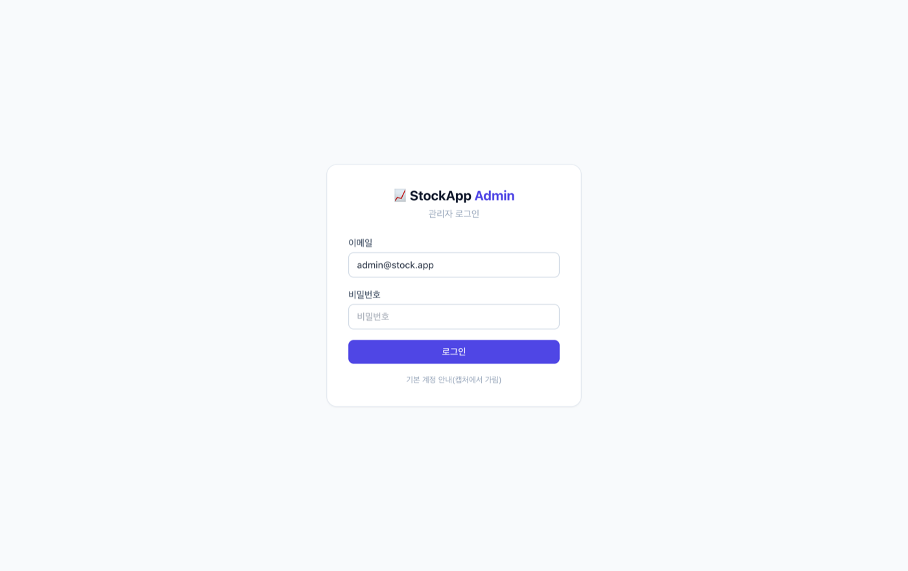
- 이메일과 비밀번호로 로그인합니다(
POST /auth/login, auth). 로그인하면 처음 가려던 화면, 기본값은/boards로 이동합니다. - 서버가 응답하지 않으면 "백엔드 연결 불가", 비밀번호가 틀리면 "비밀번호 오류"를 따로 보여 줍니다.
- 화면 아래에 기본 계정 안내 문구가 고정으로 나옵니다. 캡처에서는 가렸습니다. 운영 배포 전에 이 문구를 지울지 검토가 필요합니다.
- 상태: 완료
1. 게시판 관리 — /boards
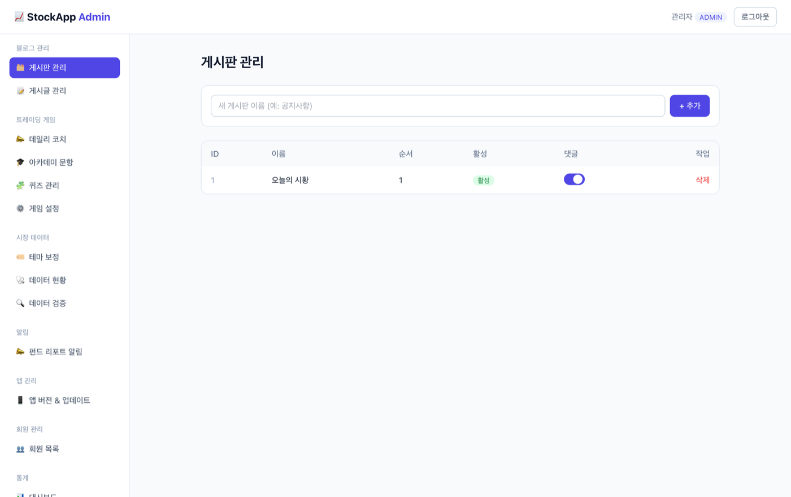
- 게시판을 조회하고 추가합니다. 이름만 넣으면 순서는 맨 뒤로 자동으로 붙습니다.
- 게시판마다 댓글 허용 스위치가 있습니다. 삭제하면 하위 글도 함께 삭제된다는 확인창이 뜹니다.
- API(blog):
GET/POST /boards,PUT /boards/{id},DELETE /boards/{id} - 상태: 완료. 이름 수정, 순서 변경, 활성화를 바꾸는 UI는 없습니다. API는 있습니다.
2. 게시글 관리 — /blogs
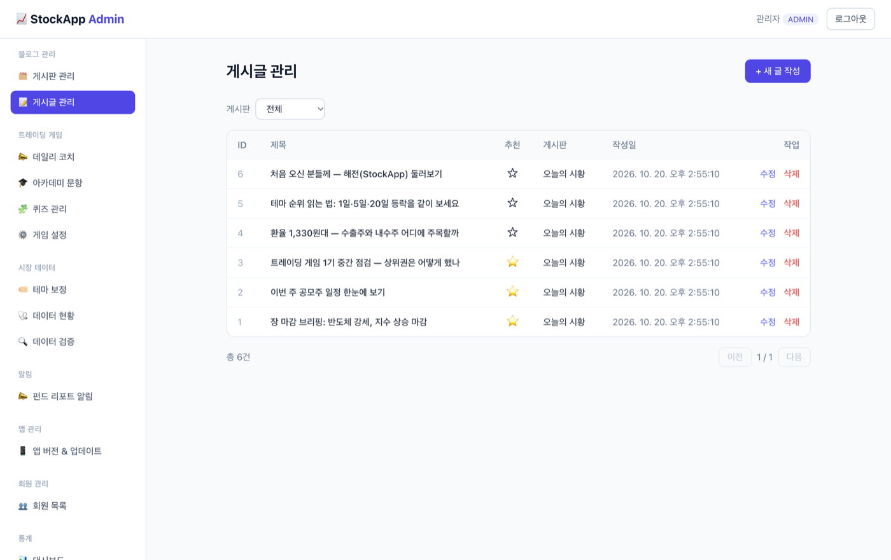
- 게시판 필터로 글 목록을 봅니다(10건씩 페이지).
- ⭐를 누르면 홈 추천 글로 지정하거나 해제합니다. 화면에 먼저 반영하고, 실패하면 원래대로 되돌립니다.
- 수정·삭제 버튼과 "+ 새 글 작성" 버튼이 있습니다.
- API(blog):
GET /blogs?board_id&page&size,PUT /blogs/{id}(featured),DELETE /blogs/{id} - 상태: 완료. 검색 기능은 없습니다.
3. 글 작성/수정 — /blogs/new, /blogs/:id/edit
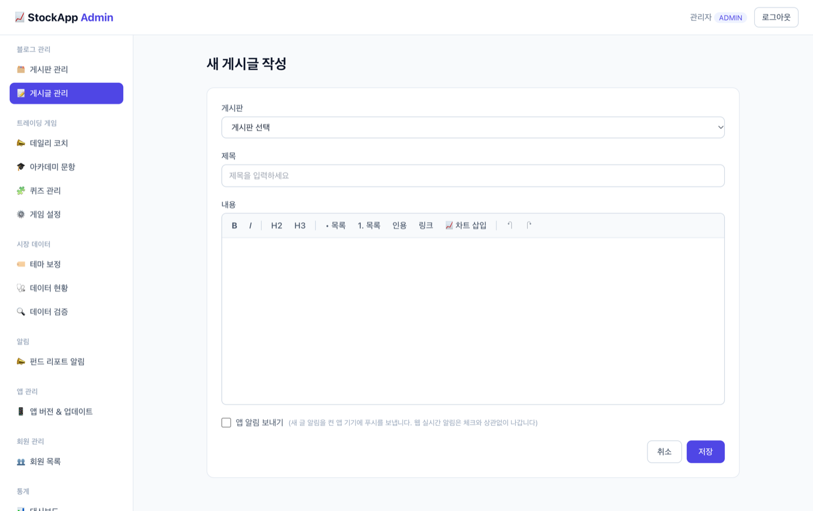
- TipTap 리치 에디터를 씁니다. 툴바: 굵게, 기울임, H2, H3, 목록, 인용, 링크, 📈 차트 삽입, 실행 취소/다시 실행.
- 앱 알림 보내기 체크박스는 새 글에만 있습니다. 체크하면 새 글 알림을 켠 앱 기기에 푸시가 갑니다. 웹 실시간 알림은 체크하지 않아도 항상 나갑니다.
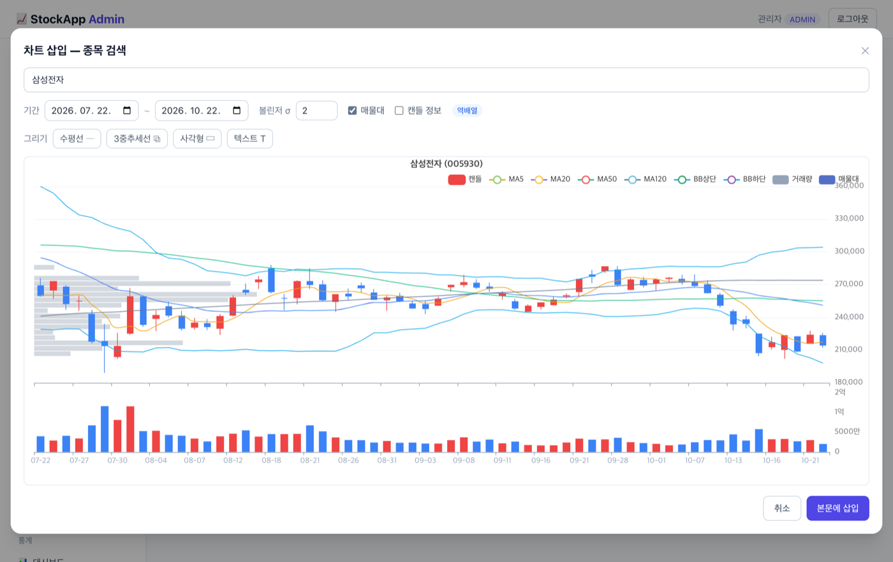
- 차트 삽입 모달은 관리자 웹의 핵심 기능입니다.
- 국내외 종목·지수를 검색하고 기간을 정합니다.
- 캔들 차트에 MA5/20/50/120, 볼린저 σ, 매물대, 캔들 정보를 켜고 끌 수 있습니다.
- 그리기 도구 4종(수평선, 3중 추세선, 사각형, 텍스트)으로 표시한 뒤 PNG로 캡처해 본문에 넣습니다.
- API
- blog:
POST /blogs(notify포함),PUT /blogs/{id} - stock_api GraphQL:
SearchStocks,GetChartData
- blog:
- 상태: 완료
4. 게시글 상세 — /blogs/:id
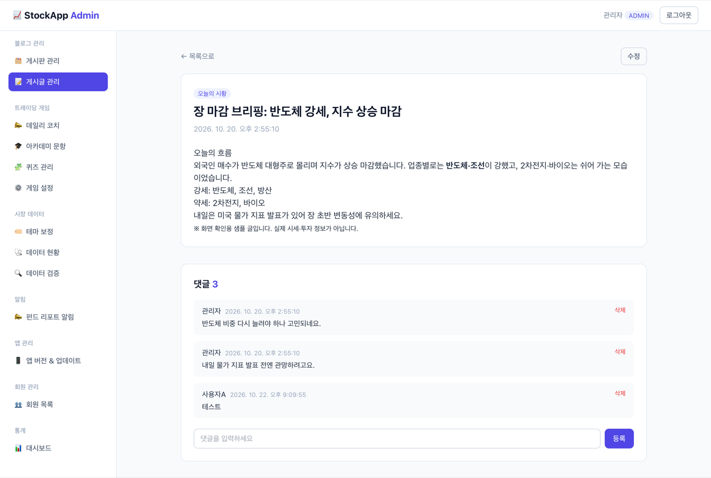
- 본문(차트 이미지 포함)과 댓글 목록을 보여 줍니다. 관리자 계정으로 댓글을 쓰거나 지울 수 있습니다.
- 게시판에서 댓글을 꺼 두었으면 입력창 대신 안내 문구가 나옵니다.
- 상태: 부분
- 댓글 수정 API(
PUT /comments/{id})는 있지만 화면에 수정 UI가 없습니다. - 본문을 정화(sanitize) 없이 그대로 넣고 있습니다. 코드에 TODO가 남아 있습니다.
- 댓글 수정 API(
- 캡처에서는 사용자 닉네임 1개를
사용자A로 바꿨습니다.
5. 데일리 코치 — /game/coach
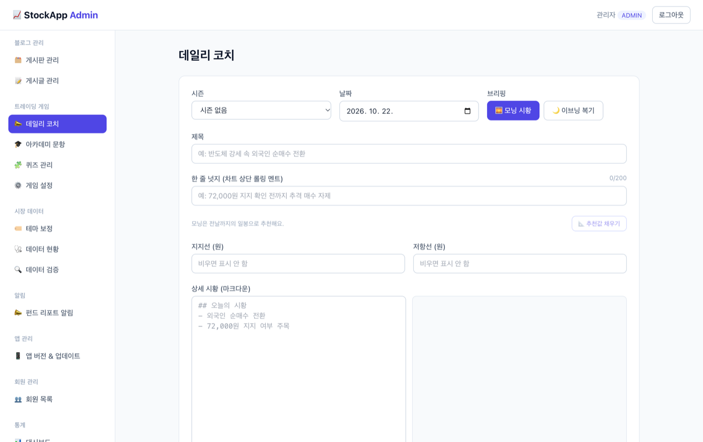
- 시즌, 날짜, 종류(🌅 모닝 시황 / 🌙 이브닝 복기)를 고르면 그 슬롯의 브리핑을 불러옵니다.
- 입력 항목: 제목, 한 줄 넛지(200자), 지지선·저항선, 마크다운 상세 시황(작성/미리보기, DOMPurify로 정화).
- 📐 추천값 채우기: 서버가 일봉으로 계산한 지지·저항선 추천값을 채워 넣습니다.
- 임시저장과 🚀 실시간 발행이 있습니다. 이미 발행한 브리핑은 다시 발행해서 수정합니다.
- API(game):
GET seasons,GET/PUT coach-messages,GET coach-levels/suggest - 상태: 완료. 운영 작업이 하나 남았습니다: 오늘 브리핑을 실제 지지·저항선 값으로 다시 발행해야 합니다.
6. 아카데미 문항 — /game/academy
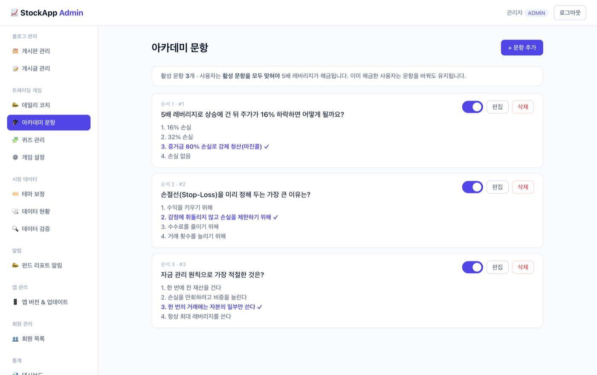
- 5배 레버리지를 해금하는 퀴즈 문항을 추가·조회·수정·삭제합니다. 질문, 선택지 2~6개, 정답, 해설, 순서, 활성 여부를 다룹니다.
- 활성 문항을 모두 맞혀야 해금된다는 안내가 있고, 활성 문항이 0개면 경고가 뜹니다.
- 상태: 완료. 웹 모달에 바뀐 내용이 반영되는지 브라우저 확인이 남아 있습니다.
7. 퀴즈 관리 — /game/quizzes
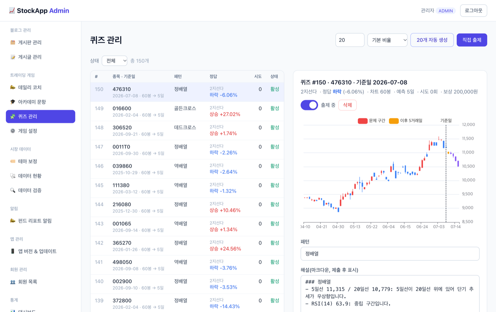
- 야간 차트 퀴즈 풀을 목록(20개씩)과 상세 두 칸으로 관리합니다.
- 자동 생성: 1~200개, 유형은 기본 비율 / 2지선다 / 등락폭 구간 / 신호 맞히기 중에서 고릅니다.
- 직접 출제: 종목과 기준일을 넣으면 정답과 해설이 자동으로 계산됩니다. 데이터가 부족하거나, 등락이 1% 미만이거나, 중복이면 거절됩니다.
- 상세
- 문제 차트 다음 5봉을 미리 볼 수 있습니다.
- 패턴명과 해설을 수정하고, 활성 여부를 토글하고, 삭제할 수 있습니다.
- 응시 기록이 있는 문제는 삭제할 수 없습니다.
- 상태: 완료. 한 번에 200개를 만들면 Cloudflare의 100초 제한에 걸릴 수 있어 50개씩 만드는 것을 권장합니다.
8. 게임 설정 — /game/settings
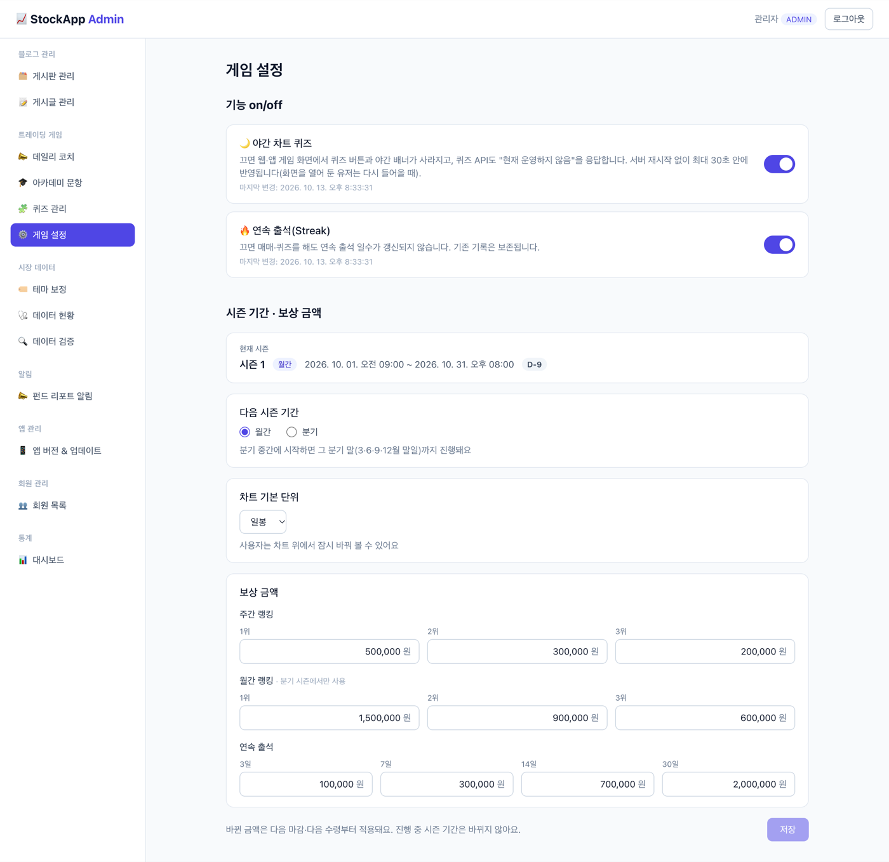
- 기능 켜기/끄기: 🌙 야간 차트 퀴즈, 🔥 연속 출석.
- 현재 시즌 정보(기간, D-day)와 다음 시즌 기간(월간/분기)을 다룹니다.
- 차트 기본 단위: 일봉, 1분, 5분, 15분, 60분.
- 보상 금액: 주간 1~3위, 월간 1~3위, 연속 출석 3/7/14/30일. 0~1억 사이 정수만 받습니다.
- 바뀐 항목만 저장합니다.
- 상태: 완료. 10/31 정산 전에 다음 시즌 기간을 확인해야 합니다.
9. 테마 보정 — /market/themes
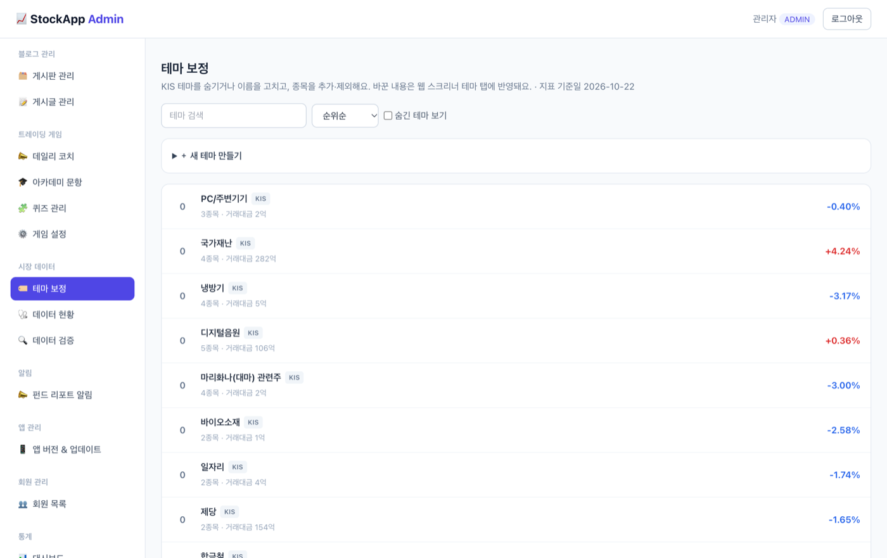
- KIS 테마와 관리자가 만든 테마를 지표(순위, 1일 등락, 거래대금, 종목 수)와 함께 보여 줍니다. 검색과 정렬이 되고, 숨긴 테마도 볼 수 있습니다.
- 새 테마 만들기, 이름·설명 수정, 숨기기/해제를 합니다. 구성 종목은 추가(편입 사유 입력), 제외, 복구할 수 있습니다.
- 바뀐 내용은 웹·앱 스크리너의 테마 탭에 반영되고, 순위는 서버가 다시 계산합니다.
- API(stock_api REST):
/api/v1/admin/themes* - 상태: 완료
10. 데이터 현황 — /market/status
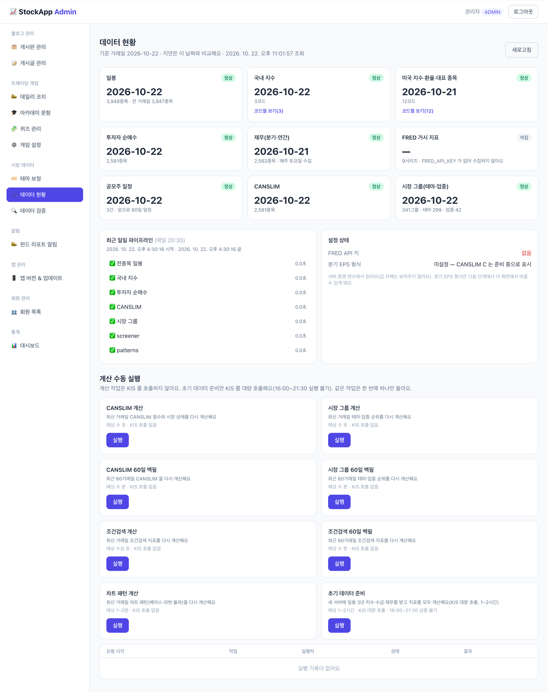
- 데이터셋별 상태 카드를 보여 줍니다(정상/오래됨/주의/없음/꺼짐/오류).
- 대상 데이터: 일봉, 국내·미국 지수, 투자자 순매수, 재무, FRED, 공모주, CANSLIM, 시장 그룹.
- 기준 거래일과 비교해 판정합니다.
- 최근 일일 파이프라인(매일 20:30)의 단계별 결과를 보여 줍니다.
- 설정 상태: FRED 키가 있는지, 분기 EPS 형식. 값 자체는 보여 주지 않습니다.
- 계산 수동 실행 8종
- CANSLIM, 시장 그룹, 조건검색, 차트 패턴 계산과 각각의 60일 백필
- 초기 데이터 준비: KIS를 대량 호출하는 작업이라 16:00~21:30에는 실행할 수 없습니다.
- 실행 중일 때는 5초마다 다시 조회하고, 실행 기록 표가 있습니다.
- 상태: 부분. 분기 EPS 형식 변경, KIS 수집 수동 실행, 단계별 재시작은 다음 단계로 미뤄 두었습니다.
- 캡처 시점에 FRED 키가 없어서 FRED 거시 지표가 '꺼짐'으로 나옵니다.
11. 데이터 검증 — /market/verify
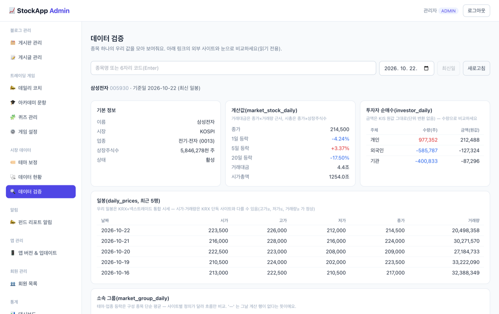
- 종목 하나에 대해 우리 DB에 있는 값을 모아 보여 주는 읽기 전용 화면입니다. 외부 사이트 링크와 눈으로 비교하는 용도입니다.
- 카드 구성: 프로필, 계산값, 투자자, 일봉 표, 테마·업종 소속, CANSLIM, 외부 링크, 재무.
- 종목과 기준일이 주소(
?ticker=&date=)에 남아서 새로고침하거나 주소를 공유해도 같은 화면이 나옵니다. - 상태: 완료
11-1. 🆕 스크리너 탭 — /market/screener (2026-10-24)
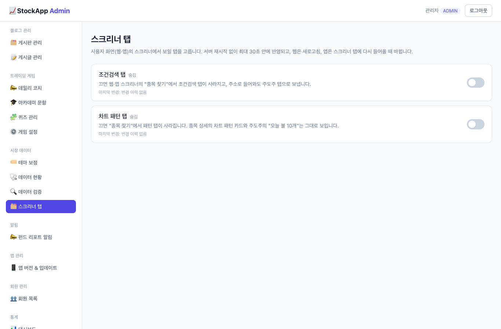
- 사용자 웹·앱 스크리너에서 조건검색과 차트 패턴 탭을 보일지 정하는 스위치 2개입니다.
- 기본은 숨김입니다. 스위치 기록(
screener_features테이블)에 행이 없거나 조회에 실패해도 숨김으로 처리합니다. 다듬는 중인 탭을 기본으로 막아 두려는 설계입니다. - 바꾸면 서버 재시작 없이 최대 30초 안에 반영됩니다(공개 조회 30초 캐시). 웹은 새로고침할 때, 앱은 스크리너 탭에 다시 들어올 때 바뀝니다.
- 탭을 숨겨도 종목 상세의 차트 패턴 카드와 주도주의 '오늘 볼 종목' 카드는 그대로 보입니다. 숨긴 탭 주소로 들어오면 주도주 탭으로 보냅니다.
- 스위치는 누르는 즉시 화면에 반영하고, 저장에 실패하면 되돌립니다. 각 카드에 마지막 변경 시각이 나옵니다.
- API(stock_api):
GET·PUT /api/v1/admin/screener/features. 사용자 쪽은 GraphQLscreenerFeatures. - 캡처 시점(10-24): 두 스위치 모두 꺼짐, "변경 이력 없음".
- 작은 불일치: 이 화면 설명은 "오늘 볼 10개"라고 쓰지만, 사용자 화면의 카드 제목은 "오늘 볼 종목"입니다.
- 상태: 완료(커밋
e7c7e23)
12. 펀드 리포트 알림 — /fund-notices
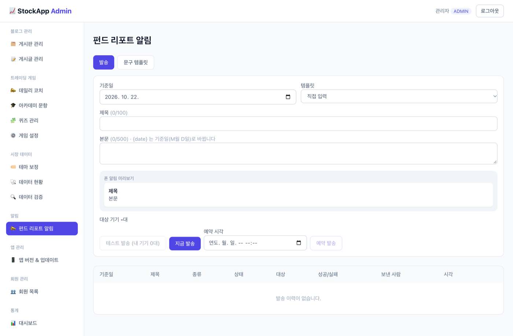
- 발송 탭
- 기준일과 템플릿을 고르고 제목(100자)과 본문(500자)을 씁니다.
{date}는 "M월 D일"로 바뀝니다. - 휴대폰 알림 미리보기, 대상 기기 수, 같은 기준일에 이미 보냈는지를 보여 줍니다.
- 발송 방법: 테스트 발송(내 기기), 지금 발송, 예약 발송. 예약은 취소할 수 있습니다.
- 펀드 알림을 보내면 앱이 꺼져 있어도 기록되도록, 무음 깨우기 푸시(
fund_refresh)도 함께 나갑니다. - 웹에는 SSE로 갱신 신호를 보냅니다.
- 기준일과 템플릿을 고르고 제목(100자)과 본문(500자)을 씁니다.
- 문구 템플릿 탭: 템플릿을 추가·수정·삭제합니다.
- API(blog):
/admin/fund-notices*,/admin/push-sends*,/admin/push-templates* - 상태: 완료. Android 실기기에서 확인했습니다. iOS 발송은 아직 범위 밖입니다.
- 캡처의 "대상 기기 -대 / 내 기기 0대"는 고장이 아닙니다. 대상 기기 수는 미리보기 응답을 받기 전까지 "-"로 나오고, 캡처에 쓴 관리자 계정에는 등록된 기기가 없었습니다.
13. 앱 버전 & 업데이트 — /app/versions
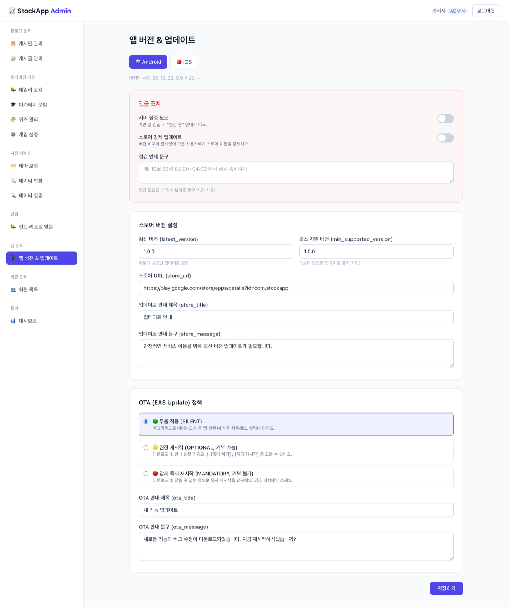
- Android와 iOS 탭을 따로 둡니다.
- 긴급 조치: 서버 점검 모드(안내 문구 포함), 스토어 강제 업데이트.
- 스토어: 최신 버전과 최소 지원 버전(semver 검사), 스토어 URL(https만), 안내 문구.
- OTA 정책: SILENT / OPTIONAL / MANDATORY와 OTA 안내 문구.
- 위험한 설정을 켜고 저장하면 확인창이 뜹니다.
- API(blog):
GET /admin/app-versions,PUT /admin/app-versions/{platform} - 상태: 완료. iOS 스토어 링크는 출시 후에 바꿉니다.
14. 회원 목록 — /members (준비 중)
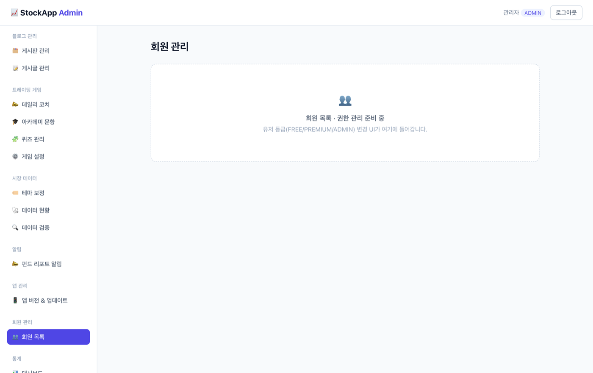
- "회원 목록 · 권한 관리 준비 중" 안내만 있습니다. 회원 등급(FREE/PREMIUM/ADMIN)을 바꾸는 UI가 들어갈 자리입니다.
- 상태: 미구현. ROADMAP에 구현 계획이 없습니다.
15. 통계 대시보드 — /stats (준비 중)
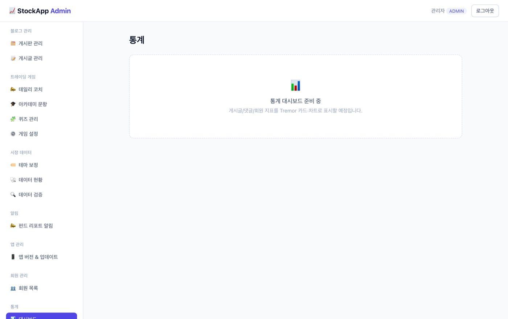
- 게시글, 댓글, 회원 지표를 보여 줄 자리입니다. 지금은 안내 문구만 있습니다.
- 상태: 미구현
모바일 앱 (mobile)
React Native(Expo) · Expo Router · Unistyles v3 · 캡처: 2026-10-22(스크리너 개요·주도주는 10-24), Android 에뮬레이터(개발 빌드
com.stockapp.dev, 1080×2400) + 로컬 백엔드(개발 DB)
한눈에 보기
| 구분 | 내용 |
|---|---|
| 라우트 화면 | 12개. 하단 탭 5개(홈, 커뮤니티, 게임, 스크리너, 내정보)와 스택 화면 7개 |
| 스택 화면 | 글 상세, 펀드 목록, 펀드 리포트, 수익 히스토리, 기록 백업, 테마/업종 상세, 종목 상세 |
| 화면 안의 하위 뷰 | 스크리너 칩 7개(두 묶음, 조건검색·패턴은 관리자 스위치로 숨김), 게임 시트 8개(랭킹, 규칙, 퀘스트, 아카데미, 퀴즈, 연속 출석, 주문 설정, 로그인 안내) |
| 앱 전체 오버레이 | 앱 업데이트 안내(5가지 모드), 토스트, API 진행 막대, 푸시 권한 시트 |
| 기기 기능 | 푸시(Expo → FCM), 백그라운드 작업, 파일 저장, SecureStore, Google Drive 백업, 딥링크, OTA 업데이트 |
| 빌드 분리 | 개발 빌드: StockApp Dev, com.stockapp.dev, 스킴 stockapp-dev운영 빌드: StockApp, com.stockapp, 스킴 stockapp |
디자인
- 토스식 레이아웃과 파스텔 C안 팔레트를 씁니다. 바탕은 라벤더, 카드는 흰색, 핑크는 포인트에만 씁니다.
- 상승은 핑크레드, 하락은 블루로 표시합니다.
- 라이트/다크 테마는 OS 설정을 따릅니다. 기준 문서는
docs/mobile_design_language.md입니다.
로그인
- 카카오·네이버 간편 로그인은 인앱 브라우저로 이동했다가 돌아오는 방식입니다. 이때 일회용 교환 코드와 PKCE를 씁니다.
- 접근 토큰은 60분, 리프레시 토큰은 30일이며 회전 방식입니다. 플랫폼마다 세션은 1개만 유지됩니다.
- 개발용 닉네임 로그인은 개발 빌드에서만 보입니다. 애플 로그인은 iOS 출시 직전에 붙일 예정입니다.
- 🆕 개발 서버에 카카오 키를 적용했고 앱 카카오 로그인 성공을 확인했습니다(2026-10-23). 네이버는 키를 발급받은 뒤 확인합니다.
1. 홈 탭 — /
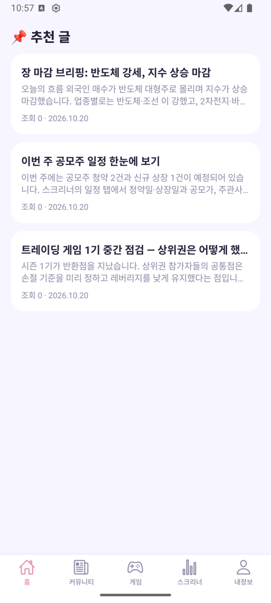
- 관리자가 ⭐로 지정한 추천 글 목록을 보여 줍니다. 당겨서 새로고침할 수 있습니다.
- 로그인한 사용자에게 새 글 알림 권한을 묻는 시트를 1번 띄웁니다.
- API(blog):
GET /api/v1/blogs?featured=true - 상태: 완료
2. 커뮤니티 탭 — /blog
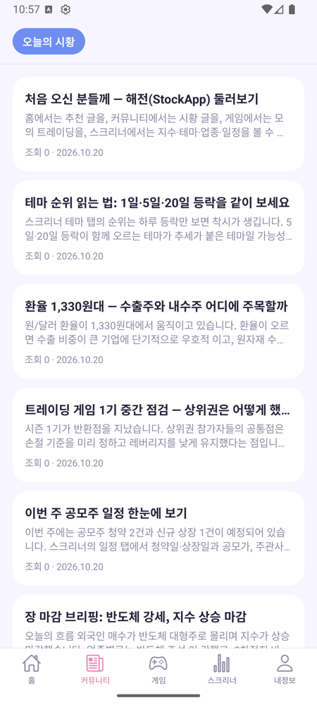
- 가로 게시판 탭에서 게시판을 고르면 글 목록이 10개씩 나옵니다. 이전/다음 페이지로 넘깁니다.
- 앱에서는 글을 쓸 수 없고, 댓글만 쓸 수 있습니다.
- API(blog):
GET /boards,GET /blogs?board_id&page&size - 상태: 완료
3. 글 상세 — /blog/[id]
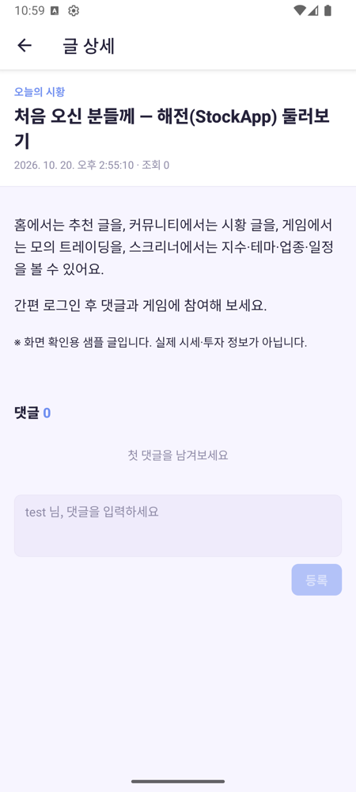
- 진입 경로: 홈·커뮤니티 카드를 누르거나, 새 글 푸시 알림을 누르면 이 화면으로 옵니다.
- 본문 HTML은 WebView로 그리고, 높이를 본문에 맞춥니다. 댓글은 로그인하면 쓸 수 있습니다(1000자).
- 상태: 완료
4. 게임 탭 — /game (가장 큰 화면)
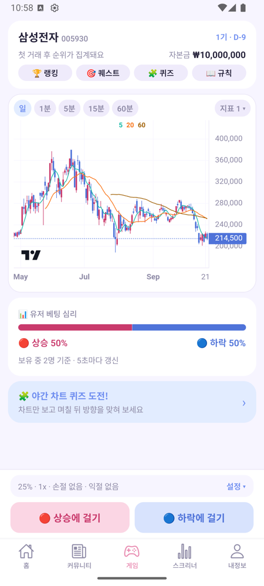
- 한 달 동안 한 종목으로 하는 실시간 가상 트레이딩입니다.
- 주문
- 상승/하락에 거는 원클릭 주문입니다. 앱 버튼은 아직 "상승에 걸기/하락에 걸기"이고, 웹은 10-23에 "상승 주문/하락 주문"으로 바꿨습니다(말투 차이, 남은 일).
- 비중(25/50/100%, 10~90% 추가), 배율(1·2·5배), 손절과 익절을 고릅니다.
- 5배는 아카데미를 통과해야 쓸 수 있습니다.
- 차트: lightweight-charts를 WebView로 띄웁니다.
- 봉 단위: 일봉, 1/5/15/60분.
- 표시 항목: 이동평균, 볼린저 밴드, 코치 지지·저항선, 진입가, 손절선.
- 🆕 로그인하지 않았을 때: 예전의 회색 한 줄 대신 설명과 로그인 버튼이 있는 카드가 나옵니다("가상 자금으로 실시간 시세에 상승·하락 주문을 넣고 주간 순위를 겨뤄요. 실제 돈은 들지 않아요"). 로그인 버튼은 내정보 탭으로 보냅니다.
- 🆕 차트 범례: 가격선 이름(지지·저항·진입·손절·익절)을 차트 안에서 빼고 범례로 옮겼습니다. 가까운 선끼리 이름이 겹치던 문제 때문입니다.
- 화면 구성 요소: 유저 베팅 심리 바(웹은 '참여자 상승·하락 비율'로 이름을 바꿈), 데일리 코치 배너, 장운영 배너(VI·거래정지·서킷브레이커), 야간 퀴즈 배너.
- 실시간 연결: WebSocket으로 시세 틱, 개인 손익, 시장 심리를 받습니다. 순위는 30초마다 새로 받습니다.
| 랭킹 시트 | 규칙 시트 |
|---|---|
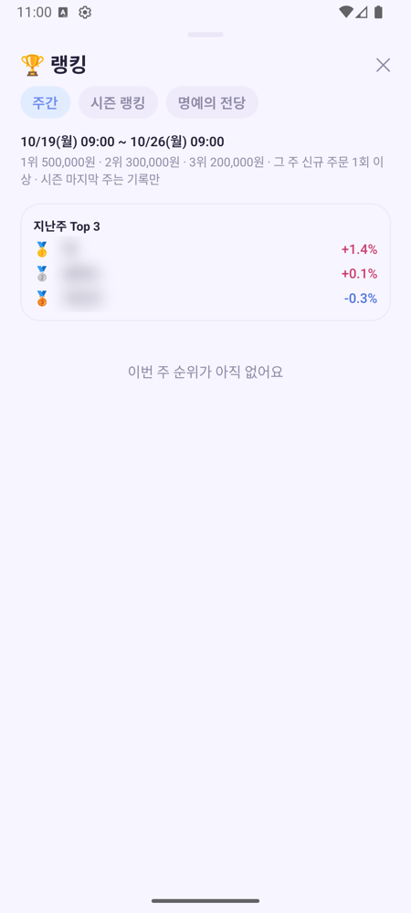 |
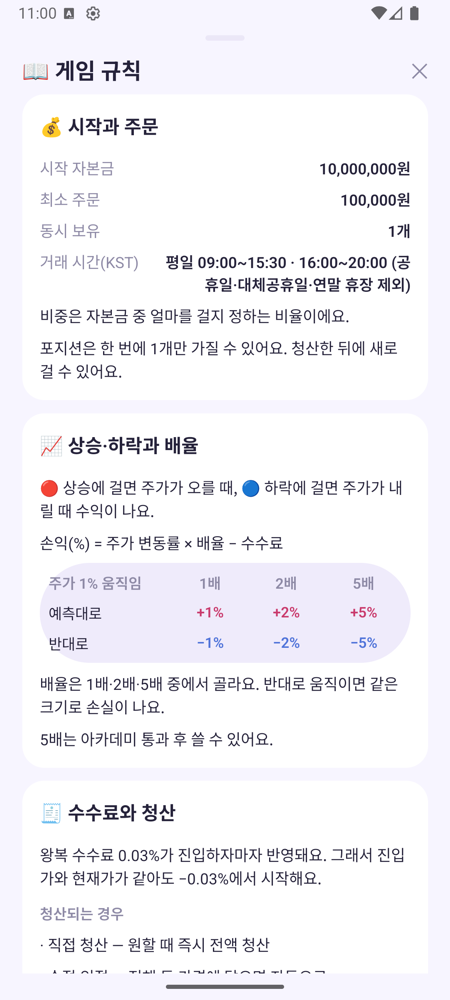 |
- 랭킹: 주간, 시즌, 명예의 전당. 캡처에서는 다른 사용자 닉네임을 흐리게 처리했습니다.
- 규칙: 시작 자본금, 거래 시간, 배율별 손익, 수수료, 청산 조건을 설명합니다.
- 그 밖의 시트: 퀘스트(보상 받기), 아카데미(5배 해금 시험), 야간 차트 퀴즈, 연속 출석 보상.
- API: trading_game
/api/game/*30여 개 + WebSocket/ws/game/stream+ stock_api GraphQLGameDailyCandles. - 상태: 코드 완료
- 실기기 확인이 남은 항목: 시트 열기/닫기, Android 뒤로가기, WebSocket 재연결.
- 운영
.env.production에EXPO_PUBLIC_GAME_API_URL이 없어서, 운영 빌드에서는 "시즌 준비 중"이 뜹니다.
5. 스크리너 탭 — /screener
위쪽 칩을 두 묶음으로 나눴습니다(10-24 기준, 웹 스크리너 메뉴와 같은 분류).
- 시장: 개요 · 테마 · 업종 · 일정
- 종목 찾기: 주도주 · 조건검색 · 패턴. 두 번째 묶음은 왼쪽 선으로 구분합니다.
모두 stock_api GraphQL을 쓰는 공개 데이터라 로그인이 필요 없습니다. 데이터는 장 마감 뒤 매일 20:30에 갱신되고, 국내 지수만 장중에 30초마다 갱신합니다.
조건검색·패턴 칩은 지금 숨겨져 있습니다. 관리자 웹 '스크리너 탭' 스위치(admin.md 11-1)가 기본으로 꺼져 있기 때문입니다. 스크리너 탭에 들어올 때마다 스위치를 다시 물어서, 앱을 다시 켜지 않아도 반영됩니다. 보던 칩이 꺼지면 주도주로 옮깁니다. 아래 조건검색·패턴 캡처는 10-22에 찍은 것입니다.
| 개요 (10-24) | 주도주 + 오늘 볼 종목 (10-24) |
|---|---|
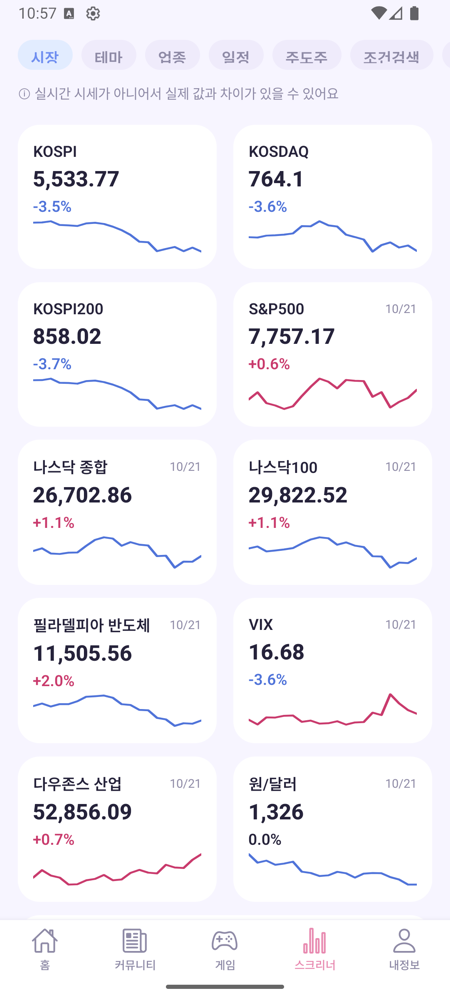 |
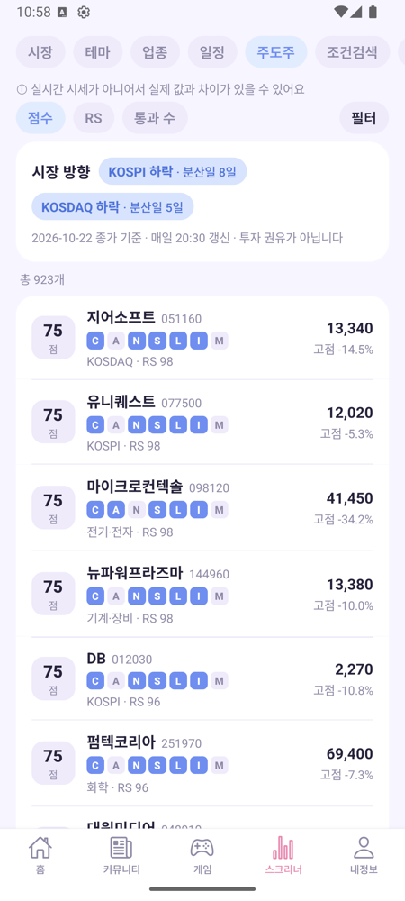 |
| 테마 | 일정 | 조건검색 (10-22, 지금 숨김) | 패턴 (10-22, 지금 숨김) |
|---|---|---|---|
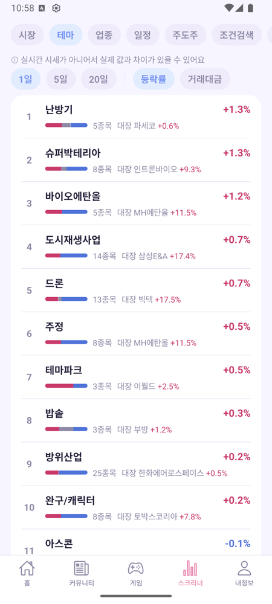 |
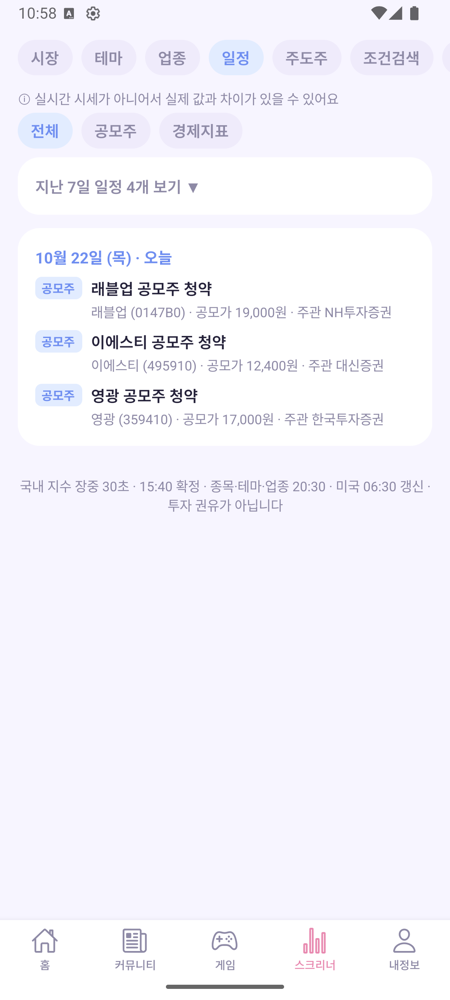 |
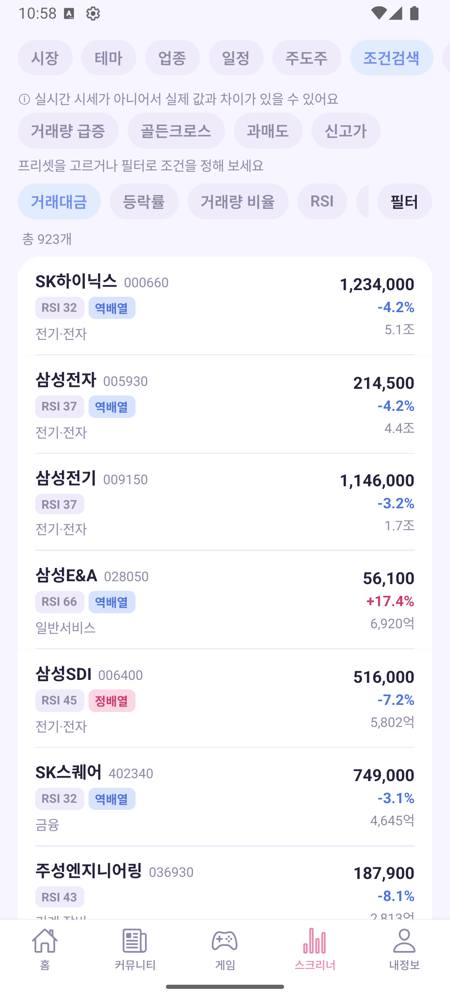 |
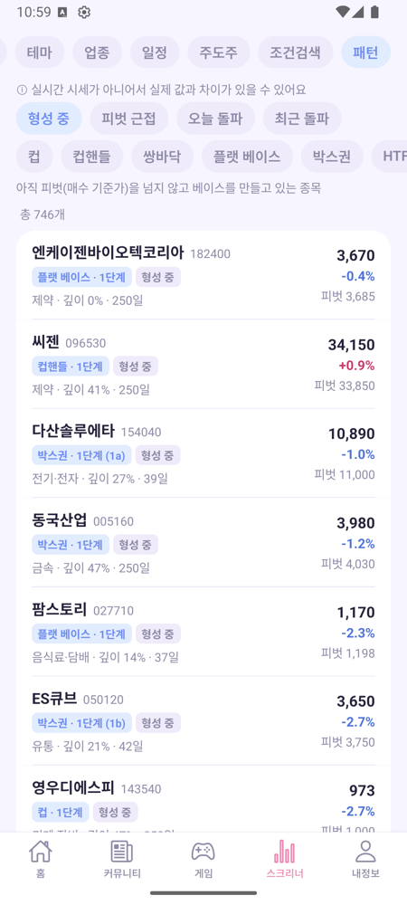 |
| 칩 | 하는 일 | GraphQL |
|---|---|---|
| 개요 | 카드를 네 묶음으로 보여 줍니다: 국내 증시, 밤사이 미국 증시, 돈의 흐름(원/달러·VIX·미 국채 10년·2년), 미국 경제지표. 그 밑에 주도 테마와 다가오는 일정 | MarketOverview |
| 테마 / 업종 | 기간(1·5·20일)과 정렬(등락률·거래대금)을 고르는 순위 목록, 무한 스크롤 | MarketGroups |
| 일정 | 공모주 청약·상장, 미국 경제지표 발표일(앞으로 60일, 지난 7일은 펼쳐 보기) | MarketCalendar |
| 주도주 | 맨 위 '오늘 볼 종목' 카드, CANSLIM 점수·RS·통과 수, 시장 방향 줄, 필터 시트 | CanslimScreen + PatternScreen |
| 조건검색 | 프리셋(거래량 급증, 골든크로스, 과매도, 신고가)과 정렬, 필터 시트 | ScreenerScreen |
| 패턴 | 형성 중, 피벗 근접, 오늘 돌파, 최근 돌파 / 컵, 컵핸들, 쌍바닥 등 | PatternScreen |
- 🆕 개요 바뀐 점
- 칩 이름이 '시장'에서 '개요'로 바뀌었습니다. 묶음 제목이 '시장'이라 이름이 겹쳤기 때문입니다.
- 원/달러와 VIX는 상승색 대신 본문색으로 쓰고 한 줄 뜻풀이를 붙였습니다(오르는 게 좋은 일이 아니어서).
- 국채·금리차 카드는 '2026-10' 대신 '10/21 기준'처럼 관측일로 표시합니다.
- '주도 테마 Top 5' 제목은 '주도 테마'로 바뀌었습니다.
- 묶는 순수 함수
groupOverview와 테스트 3건이 있습니다. 처음 보는 지표 코드도 버리지 않고 묶음 끝에 붙입니다. - 모바일 홈에는 웹 같은 '시장 노트'가 없어서, 국내 지수와 주도 테마는 계속 개요에 둡니다.
- 🆕 오늘 볼 종목(주도주 칩 맨 위)
- 주도주 50점 이상이면서 활성 패턴의 피벗까지 −15%~+5% 안에 있는 종목을 점수 높은 순으로(같으면 피벗에 가까운 순) 최대 10개 보여 줍니다. 캡처한 날(10/23 종가)은 9개였습니다.
- 행을 누르면 종목 상세로 갑니다. 불러오기에 실패하면 카드만 숨깁니다.
- 고르는 규칙은 웹과 같습니다(
mobile/src/features/leaders/today-picks.ts, 테스트 3건). 판정 근거와 한계는 screener-guide.md 2-4에 있습니다.
- 상태
- 개요, 테마, 업종, 일정, 주도주: 완료(주도주는 실기기 확인 대기)
- 조건검색, 패턴: 코드 완료, 관리자 스위치로 숨김
6. 테마/업종 상세 — /market/[kind]/[id]
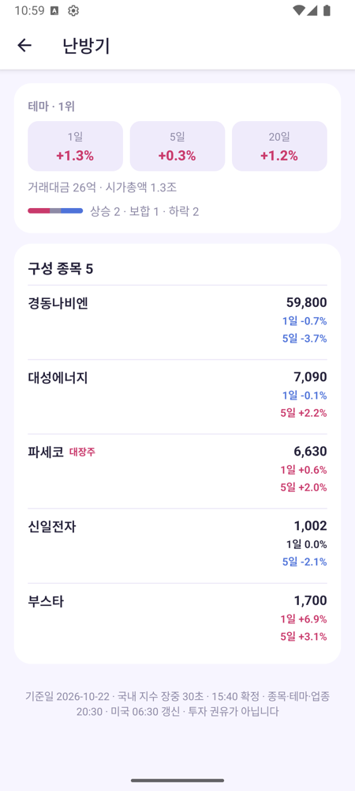
- 순위, 1·5·20일 등락, 거래대금, 시가총액, 상승/보합/하락 막대, 구성 종목(대장주 배지)을 보여 줍니다.
- 종목을 누르면 종목 상세로 이동합니다.
- API: GraphQL
MarketGroup - 상태: 완료
7. 종목 상세 — /stock/[ticker]
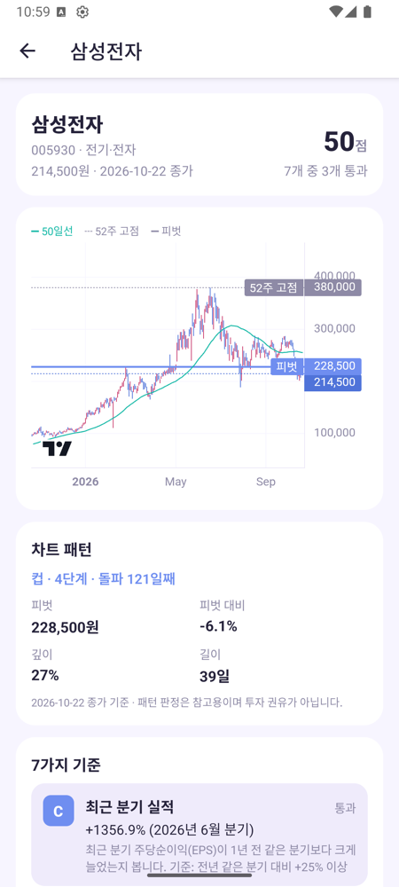
- 종가와 CANSLIM 점수(7개 기준 중 몇 개를 통과했는지)를 보여 줍니다.
- 약 1년치 일봉 차트에 50일선, 52주 고점, 패턴 피벗, 손절선이 표시됩니다.
- 🆕 선 이름은 차트 안이 아니라 위쪽 범례(색 견본 + 이름)에 나옵니다. '52주 고점'은 그 선이 실제로 그려질 때만 범례에 넣습니다. 예전에는 없는 선을 범례에 안내하는 버그가 있었습니다.
- 현재 차트 패턴(피벗, 깊이, 길이), 7가지 기준 점수표, 점수 추이가 있습니다.
- API: GraphQL
CanslimScore,PatternBases,GameDailyCandles - 상태: 코드 완료, 실기기 확인 대기
8. 내정보 탭 — /profile
| 로그인 전 | 로그인 후 |
|---|---|
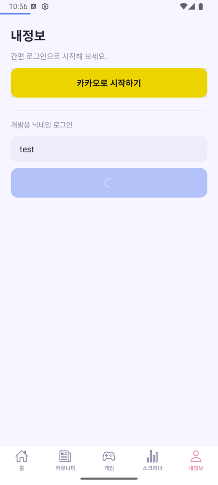 |
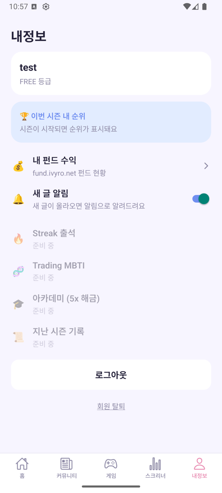 |
- 로그인 전: 카카오(·네이버) 간편 로그인 버튼이 있습니다. 서버에서 켜 둔 공급자만 보입니다. 개발 빌드에서는 닉네임 로그인도 보입니다.
- 로그인 후
- 닉네임과 등급을 보여 줍니다.
- 내 펀드 수익 메뉴가 있습니다.
- 새 글 알림 스위치는 푸시 등록 플래그
post_notice를 바꿉니다. - 로그아웃과 회원 탈퇴(“탈퇴” 입력 후 확인)가 있습니다. 🆕 탈퇴가 성공하면 그 계정의 기기 펀드 데이터를 지우고 Google에서도 로그아웃합니다(9-4).
- 상태: 부분
- "이번 시즌 내 순위" 카드는 고정 문구만 나오고 실제 순위와 연결되어 있지 않습니다.
- Streak 출석, Trading MBTI, 아카데미, 지난 시즌 기록 4줄은 "준비 중"입니다. 출석과 아카데미는 게임 탭 시트에는 있습니다.
9. 내 펀드 수익 — /fund
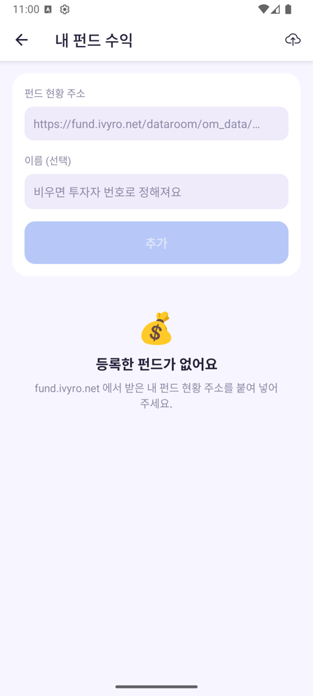
- fund.ivyro.net 펀드 현황 주소(
…/dataroom/om_data/*.htm만 허용)와 이름(선택)을 넣어 펀드를 추가합니다. 최대 10개까지입니다. - 목록은 기기에만 저장되고 서버에는 저장되지 않습니다. 앱이 원본 HTML을 직접 가져와 파싱합니다.
- 앱을 켤 때와 다시 앞으로 가져올 때 자동 갱신합니다(10분 안에 확인한 펀드는 건너뜀). 당겨서 새로고침하면 강제로 갱신합니다.
- 첫 펀드를 등록하면 푸시 권한 시트가 뜹니다. 펀드를 추가하거나 지우면 푸시 등록과 백그라운드 작업 설정을 다시 맞춥니다.
- 헤더의 ☁️ 아이콘을 누르면 기록 백업 화면으로 갑니다.
- 상태: 완료
9-1. 펀드 리포트 — /fund/[id] (캡처 없음)
- 실제 리포트에는 투자자 실명, 투자자 번호, 계좌별 금액이 들어 있어서 캡처하지 않았습니다.
- 동작
- 캐시를 먼저 보여 준 뒤, 화면을 열 때마다 원본을 다시 가져옵니다.
- 새로 가져오는 데 성공한 회차만 날짜별 히스토리에 기록합니다. 같은 날짜는 덮어씁니다.
- 가져오기 실패, 원본 형식 변경, 일부 항목 누락이 생기면 배너와 "원본 열기" 링크를 보여 줍니다.
- 헤더에 수익 히스토리 아이콘과 새로고침 버튼이 있습니다.
- 상태: 완료
9-2. 수익 히스토리 — /fund/history/[id] (캡처 없음)
- 기기에 쌓인 계좌별 기록을 차트와 날짜별 목록으로 보여 줍니다. 계좌 칩과 기간 칩(1개월, 3개월, 전체)이 있습니다.
- 기록이 빠진 날이 있으면 "이전 기록 M.D"로 표시합니다. 빈 값을 추정해서 채우지 않습니다.
- 상태: 완료. 금액이 보이는 화면이라 캡처하지 않았습니다.
9-3. 백그라운드 기록 (화면 없음)
- 관리자가 펀드 알림을 보내면 무음 깨우기 푸시가 함께 갑니다.
- 앱이 꺼져 있어도 백그라운드 작업
fund-refresh-push가 깨어나 리포트를 기록합니다. - 여러 기기가 한꺼번에 몰리지 않도록 0~10초 랜덤 지연을 둡니다. 한 번 실행은 25초 안에 끝냅니다.
- 앱이 꺼져 있어도 백그라운드 작업
- 안전망으로 약 6시간마다 도는 정기 작업
fund-refresh-periodic이 있습니다. - Android 실기기(갤럭시 A53)에서 즉시 발송, 알림 탭, 무음 푸시(백그라운드 상태와 완전히 꺼진 상태 모두)를 확인했습니다. 정기 작업이 꺼진 상태에서 실제로 도는지는 아직 측정하지 않았습니다.
- 사용자가 앱을 강제 종료했거나 iOS가 잠겨 있으면 기록되지 않을 수 있습니다.
9-4. 🆕 로그인 계정별 저장과 앱 삭제 시 정리 (2026-10-23, 캡처 없음)
- 바뀐 이유
- 예전에는 펀드 목록과 백업 상태를 기기에 키 하나로 저장했습니다. 그래서 개발용 게스트로 추가한 펀드가 카카오 계정에서도 보였습니다.
- 앱을 지워도 Android 자동 백업이나 iOS 키체인 때문에 데이터가 되살아날 수 있었습니다.
- 원칙은 그대로: 서버는 여전히 펀드 URL과 잔액을 모릅니다. 데이터는 기기 안에서 계정별로 나눌 뿐입니다. 다른 기기로 옮길 때는 같은 계정으로 Drive 복원을 씁니다.
| 항목 | 바뀐 내용 |
|---|---|
| 목록 저장 | SecureStore 키를 fund_list_v1에서 fund_list_v1_u<회원ID>로 바꿨습니다. 로그인하지 않았거나 복원 전이면 읽기와 쓰기를 모두 막아, 빈 목록으로 덮어쓰는 일을 방지합니다. |
| 캐시·기록 파일 | 펀드 id가 무작위라 겹치지 않으므로 그대로 둡니다. 어느 계정이 볼 수 있는지는 목록이 정합니다. |
| 옛 데이터 | 옛 공용 키에 펀드가 있으면 펀드 화면에 "저장된 펀드를 가져올까요?" 바텀시트를 띄웁니다(웹 9-1과 같은 문구). [가져오기]는 URL 중복을 빼고 최대 10개까지 합칩니다. 한도를 넘는 펀드는 기기에 남겨 다른 계정이 가져갈 수 있게 합니다. [버리기]는 쌓인 기록까지 지웁니다. |
| Drive 백업 | 백업 파일, 백업 상태, 대기 표시를 모두 계정별로 나눴습니다(…-u<회원ID>). Drive 작업 직전마다 현재 Google 계정이 연결할 때의 이메일과 같은지 확인하고, 다르면 작업하지 않습니다. 내 백업 파일이 없을 때만 옛 백업 파일로 복원합니다. |
| 계정 전환 | 자동 갱신과 목록 저장은 시작할 때의 계정으로 고정합니다. 저장하는 순간 계정이 바뀌어 있으면 저장하지 않습니다. 푸시 등록은 복원(hydrate)이 끝나기 전에는 fund_notice=false를 보내지 않습니다. |
| 회원 탈퇴 | 탈퇴가 성공하면 그 계정의 목록, 캐시, 기록, 백업 상태를 지우고 Google에서도 로그아웃합니다. Google 로그아웃은 그 계정이 Google을 연결했을 때만 합니다. |
| 앱 삭제(Android) | allowBackup: false로 Google 자동 백업이 재설치 때 펀드 파일과 설정을 되살리지 못하게 했습니다. 네이티브 변경이라 OTA로는 안 되고 새 APK가 필요합니다. |
| 앱 삭제(iOS) | 재설치 후 첫 실행 때 키체인에 남은 로그인 정보와 펀드 키를 지웁니다. 키 목록을 볼 수 없어서 소유자 목록 fund_owners_v1을 따로 둡니다. 삭제가 계속 실패해도 매번 로그아웃되지 않도록 재시도는 3번까지만 합니다. |
- 캡처하지 않은 이유
- 가져오기 시트를 띄우려면 옛 키에 데이터를 직접 써야 합니다.
- 지금 에뮬레이터에 설치된 APK에는
allowBackup변경이 들어 있지 않습니다. - 화면 문구와 동작은 웹과 같으니 웹 9-1 캡처를 참고하세요.
- 상태: 코드 완료(jest 테스트 포함). 새 APK 빌드 후 실기기 확인 대기. 확인 시나리오: 게스트로 추가 → 카카오 로그인 → 가져오기 안내 → 게스트로 다시 로그인했을 때 분리되는지 → 앱 삭제·재설치 후 데이터가 없는지.
10. 기록 백업 — /fund/backup
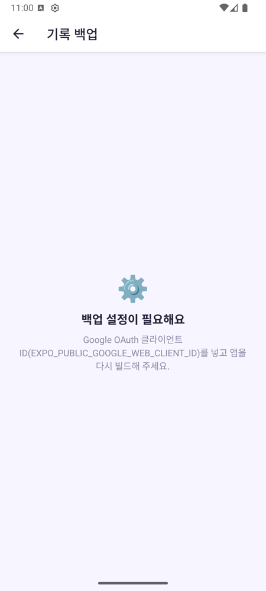
- Google 계정을 연결해 펀드 목록과 히스토리를 Google Drive의 앱 전용 폴더(appdata)에 백업하고 복원합니다.
- 새 기록이 생기면 하루 1번 자동으로 백업합니다. 백그라운드에서 생긴 기록은 앱을 다시 앞으로 가져올 때 백업합니다.
- 🆕 10-23부터 백업 파일과 상태가 앱 계정별로 나뉘고, 작업마다 Google 계정 이메일을 확인합니다(9-4). Google 계정을 확인하지 못하면 "Google 계정을 확인하지 못했어요"를 보여 줍니다.
- 상태: 코드 완료, 설정 대기.
EXPO_PUBLIC_GOOGLE_WEB_CLIENT_ID가 없어서 캡처처럼 "백업 설정이 필요해요" 화면이 나옵니다.
앱 전체 기능
| 기능 | 내용 | 상태 |
|---|---|---|
| 앱 업데이트 관리 | 실행할 때 GET /app/version-check로 점검 모드와 스토어 강제/권장 업데이트를 확인하고, 그다음 expo-updates OTA를 확인합니다. 결과에 따라 시트 5종 중 하나를 띄웁니다. |
코드 완료, 실기기 확인 대기 |
| 푸시 | Expo Push → FCM. Android 채널은 "펀드 리포트"와 "새 글" 2개. 알림을 누르면 펀드 알림은 /fund, 새 글 알림은 /blog/{id}로 이동합니다. |
Android 확인 완료, iOS는 APNs 준비 전 |
| 실시간 신호 | 앱이 앞에 있을 때 SSE로 fund_report_updated를 받으면 0~30초 뒤 펀드를 갱신합니다. |
완료 |
| 세션 | 앱을 켤 때와 다시 앞으로 가져올 때(60초 간격 제한) /auth/me로 세션을 확인합니다. 401 사유 코드별로 안내 문구가 다릅니다. |
완료 |
| 웹(expo web) | WebView와 SecureStore가 웹에서 동작하지 않아 차트, 본문, 펀드 화면을 웹에서 쓸 수 없습니다. 웹은 web_client가 맡습니다. |
해당 없음 |
사용자 웹 (web_client)
React + Vite + TailwindCSS · 로컬
http://localhost:3000· 캡처: 2026-10-24 다시 찍음(impeccable 디자인 정리 반영, 10/23 종가 데이터). 조건검색·패턴과 펀드 화면은 10-22·10-23 캡처 그대로. 개발 DB 기준, 데스크톱 1366px, 모바일 390px 폭.
한눈에 보기
| 구분 | 내용 |
|---|---|
| 화면 | 16개: 홈(오늘 시장 노트), 게시판 글 목록, 글 상세, 게임, 스크리너 7개, 종목 상세, 내정보, 펀드 목록, 펀드 리포트, 로그인 완료 |
| 그 밖 | /community는 첫 게시판으로 바로 이동 |
| 모달 | 9개: 로그인, 회원 탈퇴, 게임 모달 6개(랭킹, 규칙, 퀘스트, 아카데미, 차트 퀴즈, 연속 출석), 주문 설정 시트 |
| 메뉴 | 홈, 커뮤니티, 게임, 스크리너, 내정보. 640px 이상에서는 위쪽 메뉴, 그보다 좁으면 하단 탭바(선 아이콘)로 보입니다 |
| 탭 제목 | 경로마다 브라우저 탭 제목이 다릅니다(예: "세계 시장 · StockApp"). 글·종목 상세는 데이터가 오면 글 제목·종목명으로 바뀝니다 |
| 반응형 | 모든 화면이 모바일 폭에 맞춰집니다. 게임과 스크리너는 넓은 화면에서 2단, 좁은 화면에서 1단으로 바뀌고 항목을 펼쳐서 봅니다 |
| 웹에 없는 기능 | 푸시, 수익 히스토리, Drive 백업은 앱에만 있습니다 |
전역 요소
- 맨 위 API 진행 막대가 있습니다.
- SSE 알림 토스트를 띄웁니다. 새 글이 올라오면 "새 글: 제목"을, 펀드 리포트가 갱신되면 "오늘 수익률 리포트가 올라왔어요"를 보여 줍니다.
- 탭으로 돌아올 때
/auth/me로 세션을 확인합니다(60초 간격 제한). - 로그인 상태에서는 펀드를 자동으로 갱신합니다.
로그인
- 카카오·네이버 간편 로그인을 씁니다. 브라우저 전체가 공급자 페이지로 이동했다가
/auth/complete로 돌아오고, PKCE 교환을 거칩니다. - 개발 서버에서는 닉네임(게스트) 로그인도 보입니다. 이 기능은 운영으로 바꿀 때 꺼야 합니다.
- JWT는 localStorage에 저장하고 12시간 유지됩니다. 리프레시 토큰은 없습니다.
운영 프록시
- 운영에서는
server.cjs가 같은 도메인에서 서비스별로 요청을 넘깁니다. - 경로:
/_api/blog,/_api/auth,/_api/stock,/_api/game(WS 포함).
🆕 디자인·접근성 정리 (2026-10-23, impeccable)
impeccable 스킬로 웹 전체를 평가(critique)하고 고친 결과입니다. 점수는 25/40 → 26/40 → 27/40로 올랐고, 3차 평가에서 나온 P1 3건과 P2 2건도 그 뒤 커밋(d43b960, 7e6c991)에서 처리했습니다.
- 기준 문서
PRODUCT.md: 누구를 위한 제품인지(초보~중급 개인 투자자), 차별점 4가지, 원칙, 접근성 기준 WCAG 2.2 AA.DESIGN.md+.impeccable/design.json: 웹 디자인 시스템. 북극성은 '저녁의 라벤더 노트'로, 평평한 면과 색 층, "말랑하고 또렷하게"가 방향입니다. 토큰, 컴포넌트, 규칙을 적어 두었습니다.- 평가 기록:
.impeccable/critique/3개 파일.
- 색
- 파스텔 C안의 색상(hue)은 그대로 두고, 글자로 쓰는 토큰의 명도만 낮춰 모든 글자 대비를 4.5:1 이상으로 맞췄습니다. 검출기로 다시 검사하니 저대비 요소가 1,678건에서 0건이 됐습니다.
- 주 버튼은 파스텔 블루 바탕에 진한 글자를 씁니다(사용자 결정).
- 색의 뜻을 하나로: 핑크는 상승에만 씁니다. 오류·위험은 새
danger(호박색)로 바꿨습니다. 분류 배지는 중립색이고, 0.0%는 회색으로 보입니다.
- 레이아웃
- 모든 화면의 왼쪽 선이 같습니다(1280px 기준 x=80). 헤더 폭은 고정해서, 화면을 옮겨도 로고와 메뉴가 움직이지 않습니다.
- 제목은 24px
PageHeader, 카드 여백은Card(16/12/0px)로 통일했습니다. - 넓은 화면에서 홈과 게시판 목록은 2단이고, 옆 칸에 추천 글을 둡니다.
- 글자·말투
- 12px보다 작은 글자를 없앴습니다(하단 탭바 이름만 예외).
- 한국어는 어절 단위로 줄을 바꿉니다(
word-break: keep-all). - 화면 문구는 "~해요"체로 통일했습니다. 기준일 안내도 "10/23 종가 기준 · 투자 권유가 아니에요"로 줄였습니다.
- 조작
- 누르는 영역은 44px입니다. 칩만 32px로, 의도한 예외로
DESIGN.md에 기록했습니다. - 버튼 변형으로
tertiary(라벤더 채움)와danger를 추가했습니다. - 조작 요소에서 이모지를 빼고 선 아이콘으로 바꿨습니다. 출석 보상만 이모지를 유지합니다.
- 누르는 영역은 44px입니다. 칩만 32px로, 의도한 예외로
- 로딩: 최종 화면과 같은 크기의 뼈대를 먼저 그려서, 데이터가 들어올 때 화면이 밀리지 않습니다. CLS 측정값은 홈 모바일 0.255 → 0.012, 종목 상세 0.097 → 0.008입니다.
- 남은 것
- 모바일 앱 팔레트는 아직 대비를 맞추기 전 값입니다(
PRODUCT.md). - 카카오·네이버 공식 로그인 버튼 이미지는 사용자가 넣어 주길 기다리고 있습니다.
- 3차 평가의 사소한 관찰: 404 안내 없음, 종목 상세에 당일 등락률 없음, 로고의 📈 이모지 등.
- 모바일 앱 팔레트는 아직 대비를 맞추기 전 값입니다(
1. 홈 — / (오늘 시장 노트)
| 데스크톱 | 모바일 |
|---|---|
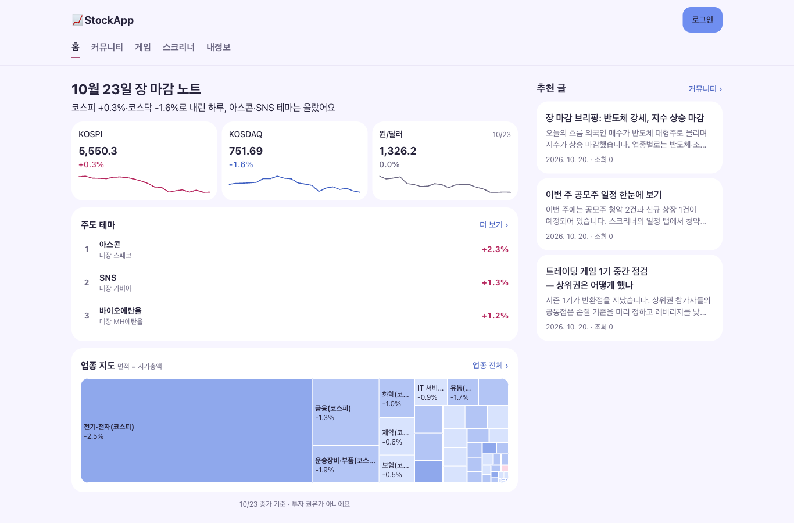 |
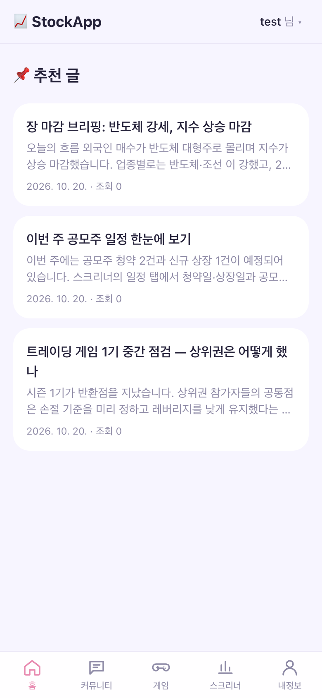 |
- 🆕 추천 글만 보여 주던 홈을 '오늘 시장 노트'로 바꿨습니다(10-23). 위에서부터 다음 순서로 나옵니다.
- 날짜 제목: "10월 23일 장 마감 노트"처럼 나오고, 장중이면 "장중 노트"로 바뀝니다.
- 한 줄 요약: 받은 숫자만으로 화면에서 만드는 문장입니다. 예: "코스피 +0.3%·코스닥 -1.6%로 내린 하루, 아스콘·SNS 테마는 올랐어요".
- 오른 하루/내린 하루/보합은 코스피·코스닥 평균으로 정하고, ±0.3% 안이면 보합입니다.
- 오른 테마는 최대 2개까지 넣습니다.
- 해석이나 전망은 넣지 않습니다(
lib/marketSummary.ts).
- 지수 카드 3장: 코스피, 코스닥, 원/달러. 장중에는 30초마다 갱신하고, 선 색은 오늘 등락을 따릅니다(0.0%면 회색).
- 주도 테마 3개와 대장주. '더 보기'를 누르면 테마 탭으로 갑니다.
- 업종 지도 미리보기(면적 = 시가총액). '업종 전체'를 누르면 업종 탭으로 갑니다.
- 추천 글: 넓은 화면(1024px 이상)에서는 오른쪽 칸에 4개, 좁은 화면에서는 노트 아래에 2개가 나옵니다. 전체 목록은 커뮤니티에 있습니다.
- 조각마다 따로 불러와서, 하나가 실패해도 나머지는 보입니다. 로딩 중에는 실제 높이와 같은 뼈대를 그려 둡니다.
- API: stock_api GraphQL(지수·테마·업종), blog
GET /blogs?featured=true. 로그인 없이 볼 수 있습니다. - 앱 홈 탭은 아직 추천 글만 보여 줍니다(웹 먼저 적용).
- 상태: 완료
2. 로그인 모달
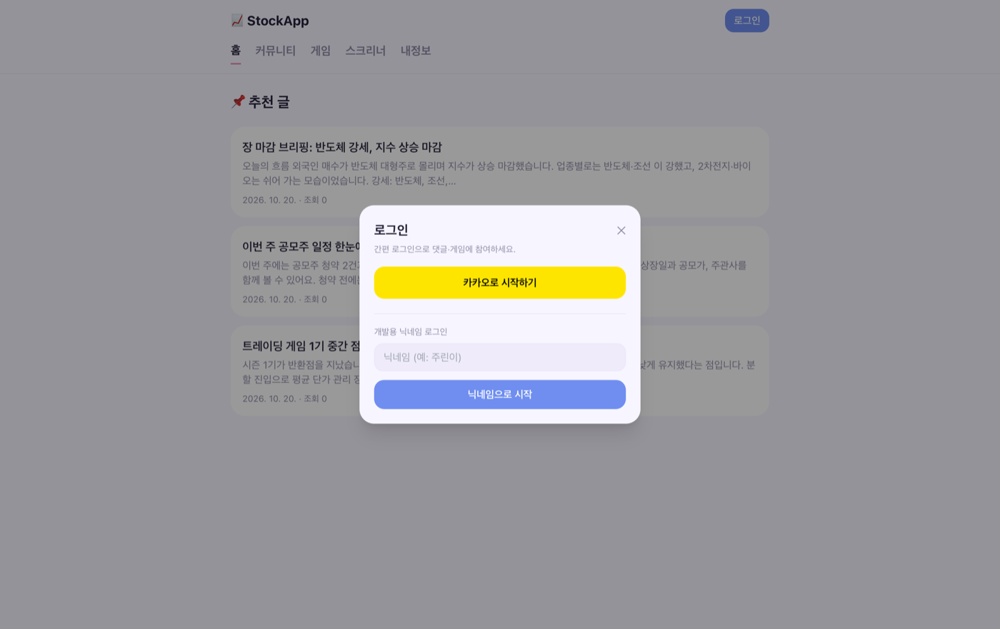
- 서버에서 켜 둔 공급자 버튼만 보입니다(
GET /auth/social/providers). 캡처 시점에는 카카오만 켜져 있었습니다. - 다음 화면에서 로그인 모달이 열립니다: 헤더의 [로그인] 버튼, 내정보, 글 상세의 댓글 영역, 게임에서 주문할 때.
- 🆕 접근성과 오류 복구 정리(10-23)
- 공용
Modal위에 올렸습니다. 화면 읽기 프로그램에 대화상자로 읽히고(role=dialog), ESC로 닫힙니다. 포커스는 창 안에 머물다가 닫으면 원래 버튼으로 돌아갑니다. - 공급자 목록을 못 받아 오면 '다시 시도' 버튼이 나옵니다.
- 간편 로그인 버튼을 누르면 이동하는 동안 비활성화됩니다("이동하고 있어요…"). 그래서 두 번 눌리지 않습니다.
- 닉네임 입력칸은 이름표와 연결돼 있고, 빈 값으로 제출하면 입력칸으로 포커스를 옮깁니다. 모바일에서는 16px이라 iOS가 화면을 확대하지 않습니다.
- 공용
- 상태: 완료. 개발 서버에 카카오 키를 적용했고 웹 카카오 로그인 성공을 확인했습니다(2026-10-23). 남은 일: 네이버 키 발급 뒤 확인, 공식 버튼 디자인.
3. 커뮤니티 — /boards/:boardId
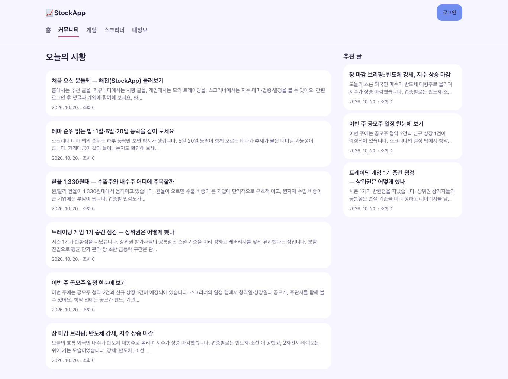
- 헤더 아래 게시판 칩에서 게시판을 고르면 글 목록이 10개씩 나옵니다. 게시판이 하나뿐이면 칩을 숨깁니다.
- 🆕 넓은 화면에서는 목록 옆 칸에 추천 글이 나옵니다. 로딩 뼈대가 있고, 페이지 버튼은 공용
Button(44px)으로 바꿨습니다. - 웹에서는 글을 쓸 수 없습니다. 글은 관리자 웹에서 씁니다.
- 상태: 완료
4. 글 상세 — /posts/:id
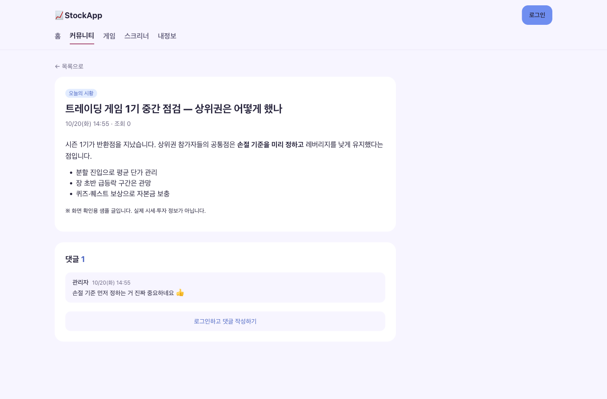
- 게시판 배지, 제목, 작성 시각(🆕 초 없이 KST "10/20(화) 14:55"), 조회수, 본문(관리자가 넣은 차트 이미지 포함)을 보여 줍니다.
- 로그인하면 댓글을 쓸 수 있습니다(1000자). 댓글을 꺼 둔 게시판이면 안내 문구가 나옵니다.
- 상태: 완료. 댓글 수정·삭제와 대댓글은 없습니다.
- 10-24 캡처의 댓글 작성자는 "관리자"라 따로 가리지 않았습니다.
5. 트레이딩 게임 — /game
| 데스크톱(2단) | 모바일(하단 주문 바) |
|---|---|
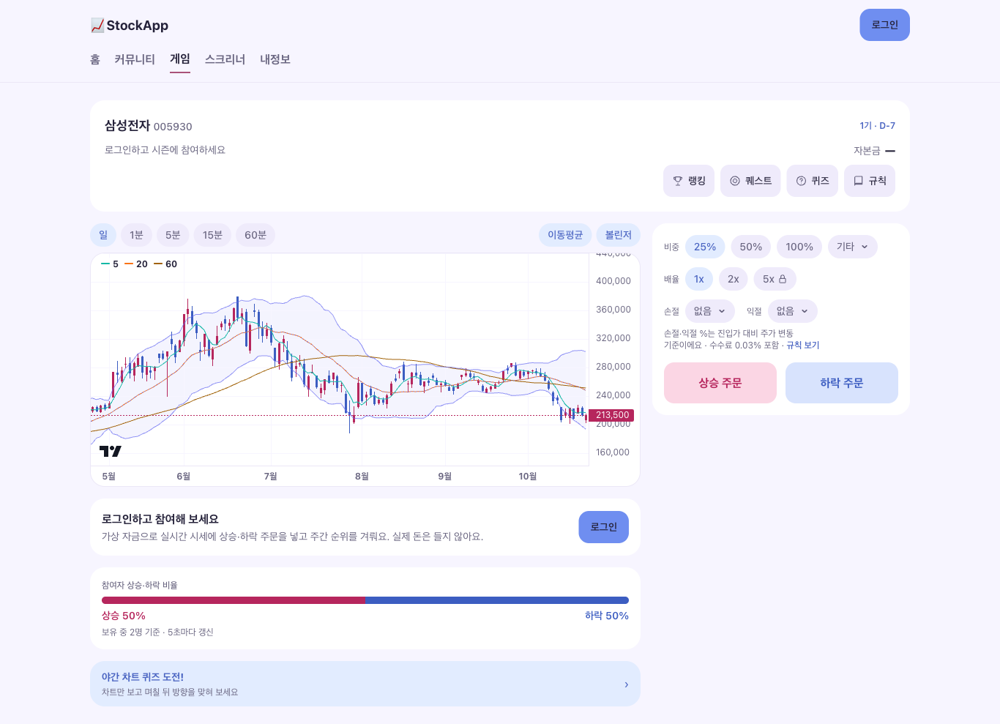 |
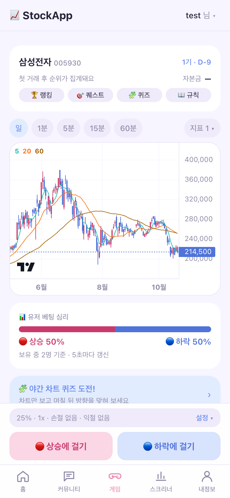 |
- 앱과 같은 실시간 가상 롱/숏 게임입니다.
- 배치
- 넓은 화면에서는 차트와 오른쪽 sticky 주문 패널을 2단으로 둡니다.
- 좁은 화면에서는 아래에 고정 주문 바를 두고, "주문 설정" 시트로 세부 값을 고릅니다.
- 차트: lightweight-charts를 씁니다. 봉 단위는 일봉과 1/5/15/60분, 보조지표는 이동평균과 볼린저 밴드입니다.
- 로그인 없이 볼 수 있는 것: 차트, 참여자 상승·하락 비율, 랭킹, 규칙. 주문을 하거나 개인 모달을 열면 로그인 모달이 뜹니다.
- 🆕 10-23 바뀐 점
- 비로그인 사용자에게는 "로그인하고 참여해 보세요" 카드(설명 + 로그인 버튼)가 나옵니다.
- 헤더의 랭킹·퀘스트·퀴즈·규칙 버튼은 무채색 선 아이콘에 44px 영역입니다. 5배 잠금은 🔒 대신 선 자물쇠와 "잠김" 이름으로 표시합니다.
- 용어도 바꿨습니다: "상승/하락에 걸기" → "상승/하락 주문", "유저 베팅 심리" → "참여자 상승·하락 비율", 순위 "Top 3" → "1~3위".
- 차트의 가격선 이름(진입·손절·지지·저항 등)은 차트 안에서 빼고 왼쪽 위 범례로 옮겼습니다. 가까운 선끼리 이름이 겹쳤기 때문입니다.
- 실시간 연결: WebSocket
/ws/game/stream- 토큰이 없으면 공개 연결로 시세 틱과 심리만 받습니다.
- 토큰이 있으면 개인 손익, 넛지, 코치 메시지, 장 상태도 받습니다.
- 상태: 완료. 일부 모달(연속 출석 보상, 주간 랭킹 보상 토스트)은 브라우저 확인이 남았습니다.
6. 스크리너 — /screener/*
모든 탭이 stock_api GraphQL만 씁니다. 로그인이 필요 없고 개인정보도 없습니다. 탭마다 주소가 따로 있습니다.
- 🆕 메뉴: 한 줄에 두 묶음으로 나눴습니다. 위아래 2층이던 메뉴를 1층으로 줄여서 높이가 약 100px에서 65px이 됐습니다.
- 시장: 세계 시장 · 테마 · 업종 · 일정
- 종목 찾기: 주도주 · 조건검색 · 패턴
- 주소(
/screener/<탭>)는 예전 그대로라 기존 링크가 깨지지 않습니다. 좁은 화면에서는 가로로 넘기고, 지금 탭이 보이도록 자동으로 이동합니다.
- 🆕 조건검색·패턴 탭은 지금 숨겨져 있습니다. 관리자 웹 '스크리너 탭' 스위치(admin.md 11-1)가 기본으로 꺼져 있어서, 캡처 화면의 메뉴에도 '주도주'만 보입니다.
- 숨긴 탭 주소로 들어오면 주도주로 보냅니다.
- 스위치 상태를 묻는 동안이나 조회에 실패했을 때도 숨깁니다.
- 모든 탭 위에 "실시간 시세가 아니어서 실제 값과 차이가 있을 수 있어요" 안내가 있습니다.
6-1. 세계 시장 — /screener/market
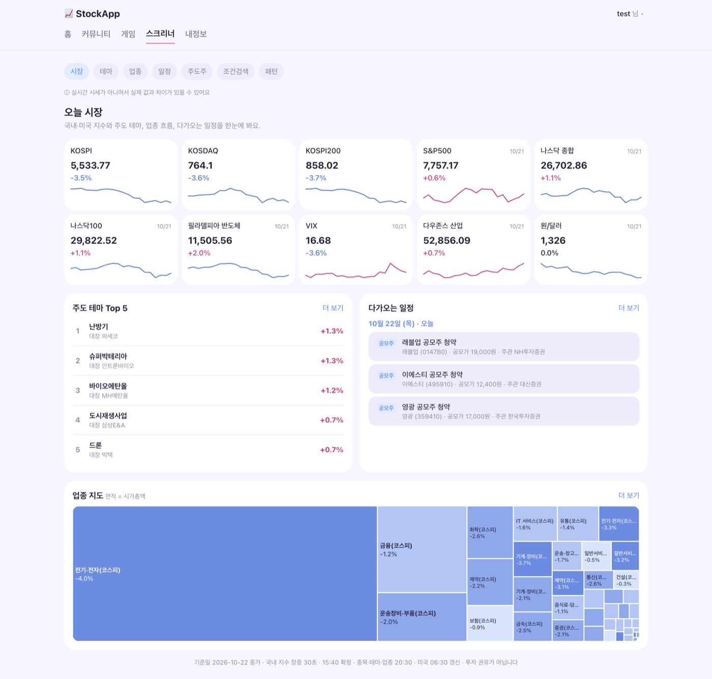
- 🆕 '시장 요약'이던 탭을 '밤사이 세계 시장'으로 바꿨습니다(10-23). 국내 지수, 주도 테마, 업종 지도는 홈 노트로 옮겨서 중복을 없앴습니다. 이 탭은 바깥 신호만 모읍니다.
- 미국 증시: S&P500, 나스닥 종합, 나스닥100, 필라델피아 반도체, 다우. 미국 마감일을 함께 표시합니다.
- 돈의 흐름: 원/달러, VIX, 미 국채 10년·2년.
- 원/달러와 VIX는 회색 숫자에 부호와 뜻풀이를 붙입니다("오르면 원화 약세", "오르면 불안이 커졌다는 뜻"). 오르는 게 좋은 일이 아니기 때문입니다.
- 국채는 FRED 데이터가 있을 때만 보입니다.
- 미국 경제지표(FRED) 카드와 다가오는 일정. 데이터가 없으면 숨깁니다.
- 넓은 화면에서는 2단이고, 카드는 내용 높이만큼만 차지합니다. 지수와 거시 지표는 탭이 보이는 동안 30초마다 다시 받습니다.
- 🆕 근원 PCE 카드가 빠지던 문제를 고쳤습니다. PCE는 발표가 두 달 늦어서 1년 전 값이 430일 창 밖에 있었습니다. 그래서 읽는 기간을 500일로 늘렸습니다(
fca10ef).
6-2. 테마 / 6-3. 업종 — /screener/themes, /screener/sectors
| 테마(목록 + 상세) | 업종(트리맵) |
|---|---|
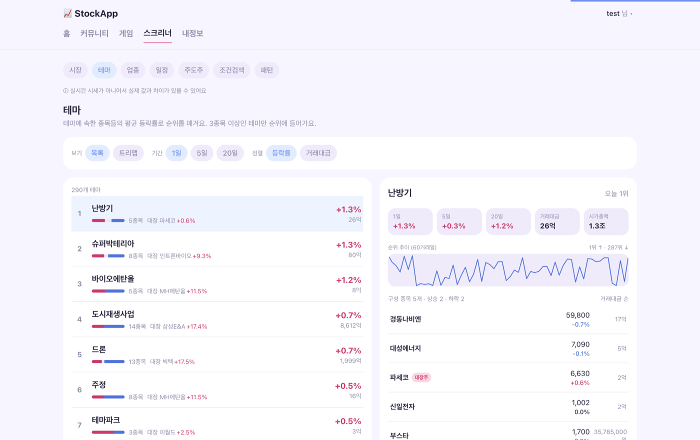 |
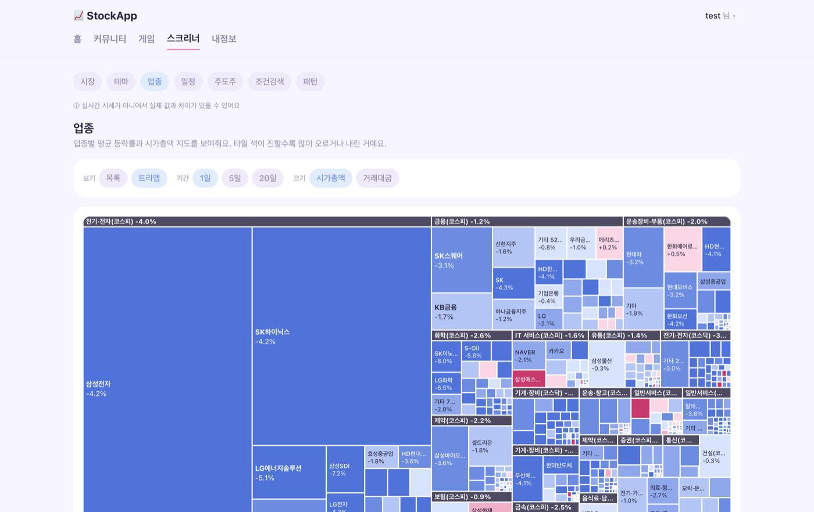 |
- 목록과 트리맵
- 보기 방식은 목록과 트리맵 두 가지입니다.
- 기간은 1/5/20일, 정렬은 등락률/거래대금입니다.
- 목록 각 행에 연속 상위 일수, 상승/하락 종목 수, 대장주가 나옵니다.
- 🆕 미니 막대 옆에 "9종목 중 3개 상승"처럼 글자도 씁니다. 색만으로 구분하지 않으려는 것입니다.
- 🆕 트리맵에서 12px 글자가 들어가지 않는 작은 칸은 글자를 숨깁니다. 대신 마우스를 올리거나 화면 읽기 프로그램으로 이름을 알 수 있습니다(예전에는 10px로 줄였음).
- 상세: 등락, 순위 추이 그래프, 구성 종목이 나옵니다. 넓은 화면에서는 오른쪽 sticky 영역에, 좁은 화면에서는 항목 아래에 펼쳐집니다.
6-4. 일정 — /screener/calendar
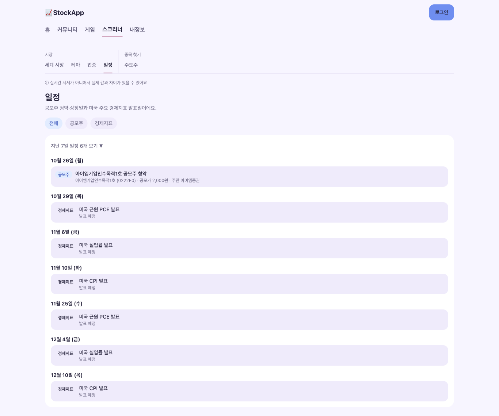
- 공모주 청약·상장일과 미국 경제지표(CPI, 고용, PCE) 발표일을 보여 줍니다. 앞으로 60일을 보여 주고, 지난 7일은 접어 둡니다.
- 🆕 지난 일정을 흐리게(opacity) 하던 처리를 없앴습니다(대비 때문). 일정 탭에는 기준일 안내도 넣지 않습니다.
- 남은 문제: 공모주 제목이 종목코드로 나오는 경우가 있습니다.
6-5. 주도주(CANSLIM) — /screener/leaders
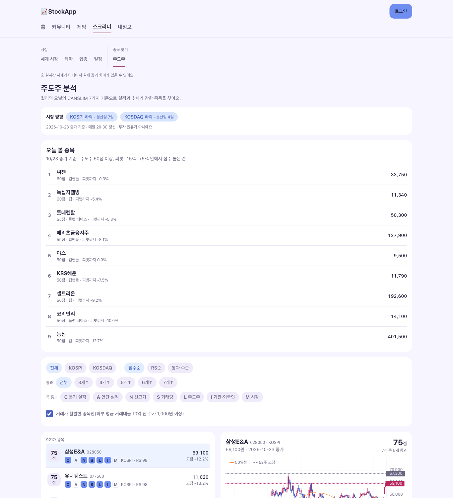
- CANSLIM 7개 기준으로 종목을 고릅니다.
- 위쪽에 시장 방향 띠가 있고, 필터는 시장, 최소 통과 수, 꼭 통과할 글자, 유동성입니다. 좁은 화면에서는 필터를 접어 두고 '필터 · n개 적용'으로 보여 줍니다.
- 🆕 '오늘 볼 종목' 카드(맨 위, 10-23)
- 주도주 50점 이상이면서 활성 패턴의 피벗까지 −15%~+5% 안에 있는 종목을 점수 높은 순으로(같으면 피벗에 가까운 순) 최대 10개 보여 줍니다. 기준은 카드 부제에 적혀 있습니다.
- 10/23 종가 기준으로는 9개였습니다. 70점 + 피벗 ±5%처럼 고정 기준을 쓰면 하락장(10/22)에서 0개가 나와서, 넉넉한 후보 안에서 순위로 자르는 방식을 택했습니다.
- 불러오기에 실패하면 카드만 숨깁니다.
- 판정 근거와 한계(막 돌파한 종목이 실제로는 빠지는 문제 등)는 screener-guide.md 2-4에 정리했습니다.
- 🆕 목록 행 통일
- 주도주, 조건검색, 패턴 세 탭이 같은 공용
StockRow를 씁니다. 순서는 이름·코드 → 배지 줄 → 오른쪽 숫자입니다. - 배지는
Tag네 가지 톤(분류·상태·상승 사건·주의)으로만 고릅니다.
- 주도주, 조건검색, 패턴 세 탭이 같은 공용
- 🆕 CANSLIM 글자 배지: 통과는 채운 배지, 미달은 빈 테두리입니다. 색을 못 봐도 구분할 수 있고, 화면 읽기 프로그램은 묶음 전체를 요약 문장으로 읽습니다.
- 상세에는 글자별 점수표, 일봉(50일선, 52주 고점), 60거래일 점수 추이가 나옵니다.
6-6. 조건검색 — /screener/finder (지금 숨김)
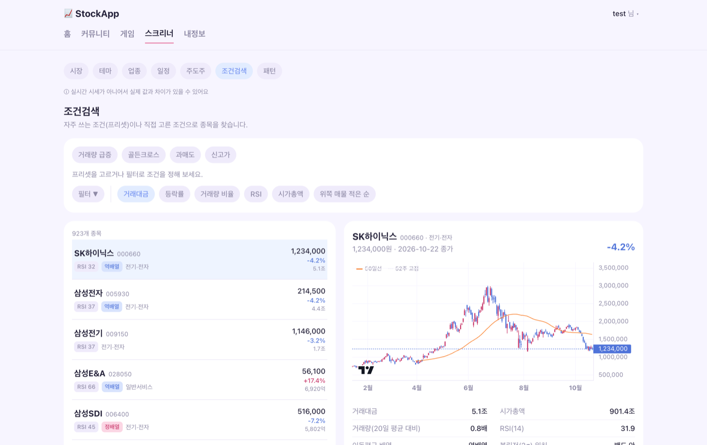
10-22 캡처입니다. 지금은 관리자 스위치로 숨겨져 있고, 그 뒤 행 모양이 공용
StockRow로 바뀌었습니다.
- 프리셋: 거래량 급증, 골든크로스, 과매도, 신고가.
- 필터: 가격, 시가총액, 거래대금, 정배열/역배열, 볼린저, 위쪽 매물, ROE, PER, PBR, 부채비율, 성장률.
- 정렬 칩은 6개입니다.
- 🆕 배지 색에 뜻을 붙였습니다. RSI 과열은 주의색에 "과열" 글자를 붙이고, 과매도·배열·골든크로스는 중립색입니다.
- 기획에는 있었지만 빠진 것: 관심 종목 담기, 미니 스파크라인, 배당·MACD 필터.
6-7. 패턴 — /screener/patterns (지금 숨김)
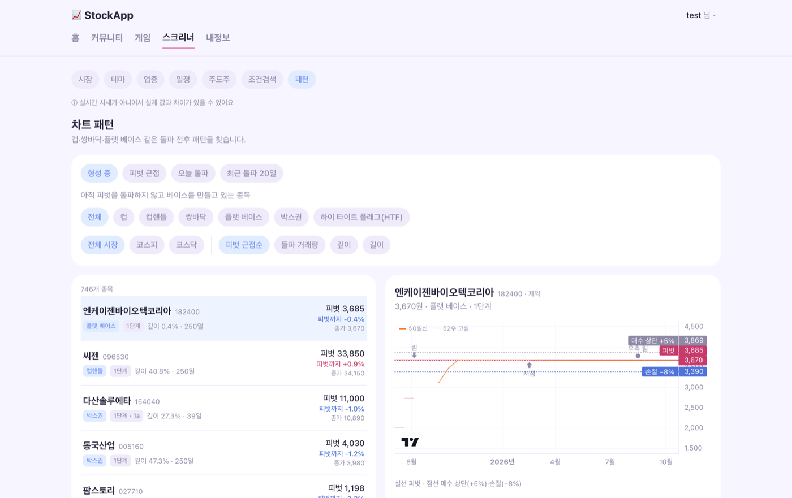
10-22 캡처입니다. 지금은 관리자 스위치로 숨겨져 있습니다.
- 리포트: 형성 중, 피벗 근접, 오늘 돌파, 최근 20일 돌파.
- 패턴: 컵, 컵핸들, 쌍바닥, 플랫 베이스, 박스권, HTF.
- 상세: 일봉에 피벗, 매수 상단, 손절선, 베이스 꼭짓점 마커가 표시되고, 베이스 이력 표가 있습니다.
- 🆕 접히는 용어 설명(베이스·피벗·깊이·길이·단계)을 넣었습니다. 패턴 종류 배지는 중립색, 단계는 테두리이고, "피벗까지"는 거리라서 회색입니다.
- 상태: 코드 완료, 숨김. 37개월치 일봉 백필 후 실데이터 검증이 필요합니다.
7. 종목 상세 — /stock/:ticker (10-22 신규)
10-24 캡처: 씨젠(096530), '오늘 볼 종목' 1위.
- 위쪽에 종목 검색창이 있습니다(이름이나 6자리 코드, 자동완성).
- 종가, CANSLIM 점수, 통과 수를 보여 줍니다.
- 일봉은 기간을 6개월, 1년, 3년 중에서 고릅니다. 50일선, 52주 고점, 피벗과 돌파 마커가 표시됩니다.
- 🆕 선 이름(50일선·52주 고점·피벗·매수 상단 +5%·손절 −8%)은 차트 안이 아니라 왼쪽 위 범례에 나옵니다. '52주 고점'은 그 선이 실제로 있을 때만 범례에 넣습니다. 예전에는 없는 선도 안내했습니다.
- 🆕 브라우저 탭 제목은 종목명으로 바뀝니다(예: "씨젠 · StockApp"). 로딩 중에는 점수표와 패턴 카드 자리에 뼈대를 그립니다.
- 차트 패턴 카드: 현재 베이스, 피벗, 깊이와 길이, 상태, 베이스 이력.
- 주도주 분석 카드: C·A·N·S·L·I·M 7개 항목의 설명과 기준, 점수 추이.
- 스크리너의 주도주, 조건검색, 패턴, 테마 상세에 있는 "종목 상세 보기 →" 링크로 들어옵니다.
- API: GraphQL
StockSearch,CanslimScore,PatternBases,GameDailyCandles - 상태: 완료(커밋 8d7d3c7)
8. 내정보 — /me
- 로그인 전: 로그인 안내 카드가 보입니다.
- 로그인 후: 닉네임 카드, 바로가기(🎮 트레이딩 게임, 💰 내 펀드 수익), 로그아웃, 회원 탈퇴가 있습니다. 회원 탈퇴는
DELETE /auth/me이고 확인 모달을 거칩니다. - 🆕 회원 탈퇴 버튼은 위험 색(
danger, 호박색)입니다. 읽기 폭 768px로 왼쪽에 붙입니다. 바로가기의 이모지는 3차 평가에서 '사소한 관찰'로 남아 있습니다. - 상태: 완료. 알림 설정 같은 항목은 앱에만 있습니다.
9. 내 펀드 수익 — /me/funds, /me/funds/:id
- 앱과 같은 펀드 현황 기능의 웹 버전입니다. 로그인해야 들어올 수 있습니다.
- 목록
- fund.ivyro.net 주소를 넣어 추가하고, 지울 수 있습니다.
- 목록 화면에서 기준일, 마지막 확인 시각, "확인 중…" 상태를 보여 줍니다.
- 목록과 캐시는 브라우저 localStorage에만 저장되고, 로그인 계정별로 나뉩니다(9-1).
- 리포트: 캐시를 먼저 보여 준 뒤 원본을 다시 가져옵니다. 가져오기 실패, 형식 변경, 누락이 생기면 배너를 보여 줍니다.
- 리포트 화면은 실명과 금액이 나와서 캡처하지 않았습니다.
- 🆕 리포트 화면의 색과 크기를 디자인 토큰으로 바꾸고, 가운데 정렬을 왼쪽 정렬로 맞췄습니다(10-23).
- 데이터 흐름
- 브라우저가 fund.ivyro.net에 직접
fetch합니다. 원본이 CORS를 허용합니다. - 백엔드는 갱신 신호(SSE
fund_report_updated)만 보냅니다.
- 브라우저가 fund.ivyro.net에 직접
- 앱과 코드 공유: 파싱·표시 로직의 원본은
mobile/src/features/fund/core/이고,web_client/src/lib/fundCore/에 같은 내용을 복사해 씁니다. 두 곳이 같은지는scripts/check-fund-core-sync.sh로 검사합니다. - 웹에서 일부러 뺀 것: 수익 히스토리, Drive 백업, 웹과 앱 사이 목록 동기화.
- 상태: 완료(웹 범위 기준)
9-1. 🆕 로그인 계정별 저장 (2026-10-23)
| 가져오기 안내 | 가져온 뒤 (계정별 목록) |
|---|---|
- 바뀐 이유: 예전에는 펀드 목록을 브라우저에 키 하나(
fund_list_v1)로 저장해서, 어느 계정으로 로그인해도 같은 펀드가 보였습니다. - 지금 동작
- 목록은
fund_list_v1_u<회원ID>키에 계정별로 저장됩니다. - 로그아웃 상태에서는 목록이 보이지 않습니다.
- 리포트 캐시는 펀드 id 기준이라 따로 옮기지 않습니다.
- 목록은
- 옛 목록 가져오기 안내
- 옛 공용 키에 펀드가 남아 있으면, 펀드 화면에 처음 들어온 계정에게 "저장된 펀드를 가져올까요?" 창을 1번 띄웁니다.
- 가져오기: 내 목록과 합칩니다. URL이 같은 펀드는 하나로 합치고, 최대 10개까지만 가져옵니다. 한도를 넘는 펀드는 이 브라우저에 남겨 두고 개수를 알려 줍니다.
- 버리기: 확인을 받은 뒤 옛 목록과 해당 캐시를 지웁니다.
- 창을 닫기만 하면 아무것도 바꾸지 않고, 다음에 들어올 때 다시 묻습니다.
- 회원 탈퇴: 탈퇴가 성공했을 때만 그 계정의 펀드 목록과 캐시를 브라우저에서 지웁니다.
- 자동 갱신: 갱신하는 도중에 계정이 바뀌어도 처음 시작한 계정으로만 저장합니다. 다른 계정 목록으로 새지 않습니다.
- 캡처는 가짜 펀드 2개(
예시 펀드 A/B)로 찍었고, 찍은 뒤 지웠습니다. - 상태: 완료(커밋
6ba9a85,03d906a). 설계 문서:docs/superpowers/specs/2026-10-23-fund-per-account-storage-design.md
10. 간편 로그인 완료 — /auth/complete (캡처 없음)
- 소셜 로그인 콜백이 돌아오는 경로입니다. 화면에는 "로그인 중…"만 잠깐 보입니다.
?code=를 받으면 PKCE verifier와 함께 교환해서 JWT를 저장하고, 로그인 전에 있던 경로로 돌아갑니다.?error=를 받으면 사유를 보여 줍니다: 취소, 이용 제한, 만료, 실패.- 상태: 완료
스크리너 쉽게 이해하기 — 주도주 · 조건검색 · 패턴 (2026-10-24)
주식을 처음 보는 사람도 스크리너의 주도주, 조건검색, 패턴 탭이 종목을 어떻게 고르는지 이해할 수 있게 풀어 쓴 안내서입니다.
- 기준:
dev브랜치e7c7e23시점 코드. 숫자 기준은 모두 코드에 있는 값 그대로입니다. - 읽는 순서: 1장 기본 용어 → 2장 주도주 → 3장 조건검색 → 4장 패턴 → 5장 맞는지 따져 보기.
- 주의: 이 화면들은 "공부하고 살펴볼 후보"를 보여줄 뿐, 사라는 뜻이 아닙니다. 모든 판정은 전날 종가 기준이고 매일 저녁 20:30에 다시 계산합니다.
각 기준 옆에 붙은 꼬리표는 그 숫자가 어디서 왔는지 알려줍니다.
- [원전] 윌리엄 오닐의 책 How to Make Money in Stocks 에서 흔히 인용되는 기준
- [근사] 원래 공식이 공개되지 않아, 널리 쓰이는 비슷한 방법으로 대신한 것
- [국내 대체] 미국 데이터를 한국에서 구할 수 없어 비슷한 한국 데이터로 바꾼 것
- [자체 설계] 이 앱에서 정한 기준
- [기존 정의] 앱의 차트·게임 화면과 똑같이 맞춘 정의
- [미국 기준 이식] 미국 종목 차트 서비스(MarketSurge) 화면에 맞춘 값을 그대로 가져온 것
1. 먼저 알아둘 기본 용어
1-1. 가격과 차트
- 봉(캔들): 하루 동안의 가격 움직임을 막대 하나로 그린 것. 이 문서의 "일" 은 거의 모두 거래일(주말·공휴일 빼고 시장이 열린 날)입니다. 1년은 약 252거래일, 한 달은 약 21거래일, 3개월은 약 63거래일입니다.
- 일봉: 하루 하나씩 그린 봉. 스크리너는 일봉만 씁니다(주봉·월봉은 쓰지 않음).
- 시가 · 고가 · 저가 · 종가: 그날 처음 거래된 가격, 가장 높았던 가격, 가장 낮았던 가격, 마지막 가격.
- "장중 고가" = 그날 거래 시간 중 한 번이라도 찍은 가장 높은 가격.
- 등락률: 어제 종가 대비 오늘 종가가 몇 % 움직였는지. 예) 어제 10,000원 → 오늘 10,500원 = +5%.
- 52주 최고가: 최근 1년(252거래일) 동안 가장 높았던 가격. 신고가 = 그 기록을 새로 넘긴 것.
- 수정주가: 액면분할(1주를 여러 주로 쪼갬)처럼 주식 수가 바뀌면 과거 가격도 같은 기준으로 고친 가격. 고치지 않으면 분할하는 날 주가가 갑자기 폭락한 것처럼 보입니다. 한국투자증권(KIS) 수정주가는 분할·병합만 반영하고 배당은 반영하지 않습니다.
- 상한가 · 하한가: 한국 주식은 하루에 ±30%까지만 움직일 수 있습니다. 미국에는 이 제한이 없습니다(4장 패턴 기준값과 관련된 차이).
1-2. 거래량과 돈
- 거래량: 그날 사고팔린 주식 수.
- 거래대금: 거래된 돈의 양. 이 앱에서는
종가 × 거래량으로 계산합니다. - 평균 거래량: 최근 N일 거래량의 평균. "오늘 거래량이 평균의 2배" = 평소보다 두 배 많이 거래됐다는 뜻.
- 시가총액(시총): 회사 전체의 가격.
종가 × 상장 주식 수. - 유동성: 사고팔기 쉬운 정도. 거래가 적은 종목은 원하는 가격에 사거나 팔기 어렵고, 적은 돈으로도 가격이 크게 흔들립니다.
- 이 앱의 유동성 종목 기준 [자체 설계]: 최근 20거래일 평균 거래대금 10억 원 이상 그리고 종가 1,000원 이상. 주도주·조건검색 목록은 기본으로 유동성 종목만 보여줍니다.
1-3. 이동평균선과 배열
- 이동평균(MA, 이평선): 최근 N일 종가의 평균. 매일 하루씩 밀려가며 다시 계산하므로 선으로 이어집니다.
- 예) 5일 이동평균 = 최근 5거래일 종가의 평균.
MA20= 20일선,MA60= 60일선. - 짧은 선(5·20일)은 최근 흐름, 긴 선(120·200일)은 큰 흐름을 보여줍니다.
- 예) 5일 이동평균 = 최근 5거래일 종가의 평균.
- 정배열: 짧은 선이 위, 긴 선이 아래로 차례대로 놓인 상태(이 앱:
5일선 > 20일선 > 50일선 > 120일선). 꾸준히 오르는 종목에서 나타납니다. - 역배열: 반대로 짧은 선이 가장 아래. 꾸준히 내리는 종목에서 나타납니다.
- 골든크로스: 짧은 선이 긴 선을 아래에서 위로 뚫고 올라가는 것. 하락 → 상승으로 흐름이 바뀌는 신호로 봅니다. 반대는 데드크로스.
1-4. 시장과 투자자
- 지수: 시장 전체의 가격을 하나의 숫자로 만든 것. KOSPI(코스피, 큰 회사 중심 시장)와 KOSDAQ(코스닥, 성장·기술 회사 중심 시장).
- 기관: 은행·보험사·연기금·자산운용사(펀드) 같은 큰 돈을 굴리는 회사.
- 외국인: 해외 투자자.
- 순매수: 산 양 − 판 양. 플러스면 더 많이 샀다는 뜻.
- 백분위: 100명 줄을 세웠을 때 몇 번째쯤인지. "백분위 80" = 아래로 80%를 이기고 위로 20%만 있는 위치.
1-5. 회사 실적 용어
- 결산 · 결산월: 회사가 1년 장부를 마감하는 것과 그 달. 한국 회사는 대부분 12월 결산입니다.
- 분기: 1년을 석 달씩 넷으로 나눈 것(1분기 = 1~3월 …).
- 순이익: 회사가 1년(또는 한 분기) 동안 번 돈에서 모든 비용과 세금을 뺀 최종 이익.
- EPS(주당순이익):
순이익 ÷ 주식 수. 주식 1주가 번 돈. 회사 크기와 상관없이 비교할 수 있어 성장 판단에 씁니다. - BPS(주당순자산):
순자산(자본) ÷ 주식 수. 회사를 지금 정리하면 1주에 돌아올 몫에 가까운 값. - ROE(자기자본이익률):
순이익 ÷ 자기자본 × 100. 주주가 맡긴 돈으로 1년에 몇 %를 벌었는지. ROE 17% = 100원으로 17원을 벌었다는 뜻. - PER(주가수익비율):
주가 ÷ EPS. 지금 주가가 1년 이익의 몇 배인지. 낮을수록 이익에 비해 싸다는 뜻이지만, 성장주는 보통 높습니다. - PBR(주가순자산비율):
주가 ÷ BPS. 1보다 작으면 장부상 가치보다 싸게 거래된다는 뜻.- EPS·BPS 가 0 이하(적자·자본잠식)면 PER·PBR 은 의미가 없어 계산하지 않습니다.
- 부채비율:
부채 ÷ 자기자본 × 100. 높을수록 빚이 많습니다. - 매출 성장률 · 영업이익 성장률: 작년 대비 올해 매출·영업이익이 몇 % 늘었는지.
- 흑자 전환: 작년엔 적자(손해)였는데 올해 흑자(이익)로 바뀐 것.
- 연평균 성장률(CAGR): 여러 해 동안 매년 평균 몇 %씩 컸는지. 예) EPS 1,000원 → 3년 뒤 1,953원이면 연평균 약 25% 성장(1,000 × 1.25 × 1.25 × 1.25 ≈ 1,953).
- 누적 실적: 연초부터 지금까지 더한 값. KIS 분기 EPS 는 누적으로 옵니다(2026-10-22 실측: 결산월 분기 EPS 와 연간 EPS 가 11,494건 중 11,493건 일치). 그래서 "3분기만의 EPS" 를 알려면
3분기 누적 − 2분기 누적처럼 빼야 합니다.
2. 주도주 탭 — CAN SLIM
2-1. CAN SLIM 이란
미국 투자자 윌리엄 오닐(William O'Neil) 이 크게 오른 종목들이 오르기 직전에 가지고 있던 공통점을 연구해 정리한 7가지 조건입니다. 그는 이 연구로 투자 신문 Investor's Business Daily(IBD)와 차트 서비스(현재 MarketSurge)를 만들었습니다. 7가지 조건의 첫 글자를 이어 붙인 이름입니다.
| 글자 | 영어 | 쉬운 뜻 |
|---|---|---|
| C | Current quarterly earnings | 최근 분기 이익이 크게 늘었나 |
| A | Annual earnings increases | 몇 년 동안 꾸준히 이익이 늘었나 |
| N | New products, New highs | 새로운 것(제품·경영)이 있고, 주가가 신고가 근처인가 |
| S | Supply and demand | 사려는 힘이 파는 힘보다 큰가 |
| L | Leader or laggard | 업종 안에서 앞서가는 종목(주도주)인가, 뒤처지는 종목인가 |
| I | Institutional sponsorship | 기관(큰손)이 사고 있나 |
| M | Market direction | 시장 전체가 오르는 흐름인가 |
- 주도주: 시장이나 업종에서 가장 먼저, 가장 강하게 오르는 종목. 오닐은 "뒤처진 싼 종목(laggard)보다 비싸도 앞서가는 종목(leader)을 사라" 고 했습니다.
- 판정 결과 4가지 (화면의 ✅/❌ 등):
- 통과 — 기준을 넘음.
- 미달 — 기준에 못 미침.
- 데이터 부족 — 판단할 데이터가 아직 모자람(예: 상장 1년이 안 돼 1년 수익률을 못 구함).
- 준비 중 — 데이터 형식 확인 전이라 일부러 꺼 둔 상태(지금은 C 도 켜져 있음).
2-2. 7가지 항목 하나씩
C — 최근 분기 실적 [원전]
- 보는 것: 최근 분기 EPS 가 1년 전 같은 분기보다 얼마나 늘었는지.
- 같은 분기끼리 비교하는 이유: 장사가 계절을 타는 회사가 많아서(예: 아이스크림 회사는 여름 분기가 늘 좋음) 바로 앞 분기와 비교하면 착각하기 쉽습니다.
- 통과 기준: +25% 이상. 1년 전 적자 → 올해 흑자(흑자 전환)도 통과.
- 계산 예: 올해 3분기 EPS 500원, 작년 3분기 EPS 380원 →
(500 ÷ 380 − 1) × 100 ≈ +31.6%→ 통과. - 세부: KIS 분기 값이 누적이라, 직전 분기 누적을 빼서 "그 분기만의 EPS" 로 바꾼 뒤 비교합니다. 회계연도 첫 분기는 빼지 않고 그대로 씁니다.
- 화면 표시:
+31.6% (2026년 9월 분기)또는흑자 전환 (…),적자 지속 (…).
A — 연간 실적 [원전]
- 보는 것: 결산이 끝난 최근 4개 연도의 EPS 가 해마다 늘었는지, 3년 동안 연평균 몇 % 컸는지, 최근 ROE 가 얼마인지.
- 통과 기준: 4개 연도 EPS 가 매년 증가 + 연평균 25% 이상 + 최근 ROE 17% 이상. 셋 다 맞아야 통과.
- 계산 예: EPS 1,000 → 1,300 → 1,600 → 2,100원. 매년 증가 ✅, 연평균 =
(2,100 ÷ 1,000)^(1/3) − 1 ≈ 28%✅, ROE 19% ✅ → 통과. - 세부:
- 아직 끝나지 않은 올해의 누적 값(예: 6월까지 반년치)은 1년치가 아니라서 뺍니다.
- 첫해나 마지막 해가 적자면 연평균 성장률을 정의할 수 없어 미달입니다.
- 화면 표시:
연평균 +28.0% · ROE 19.0%.
N — 신고가 근처 [원전]
- 원래 뜻: 신제품·새 경영진·업계 변화 같은 "새로운 것" 이 있고, 그 결과 주가가 신고가를 만들고 있는 종목. 오닐은 "너무 비싸 보이는 신고가 종목이 더 오르고, 싸 보이는 신저가 종목은 더 내린다" 고 했습니다.
- 이 앱이 보는 것: "새로운 것" 은 숫자로 판단할 수 없어서, 결과인 주가 위치만 봅니다. 종가가 52주 최고가의 몇 % 인지.
- 통과 기준: 85% 이상(최고가에서 15% 이내).
- 계산 예: 52주 최고가 20,000원, 오늘 종가 18,000원 → 90% → 통과.
- 세부: 상장 60거래일 이상이면 계산합니다(새로 상장한 강한 종목도 볼 수 있게).
- 화면 표시:
고점 대비 −10.0%.
S — 거래량 수급 [근사]
- 원래 뜻: 주식 수(공급)가 적고, 사려는 사람(수요)이 많은가.
- 이 앱이 보는 것: 최근 50거래일 중 오른 날의 거래량 합 ÷ 내린 날의 거래량 합 — IBD 가 쓰는 "상승/하락 거래량 비율(Up/Down Volume Ratio)" 입니다. 오르는 날 거래가 많다는 건 큰돈이 사들이고 있다는 흔적이라고 봅니다.
- 통과 기준: 1.0배 이상(오른 날 거래가 내린 날보다 많거나 같음).
- 계산 예: 50일 중 오른 날 거래량 합 300만 주, 내린 날 200만 주 → 1.5배 → 통과.
- 세부: 보합(변화 없음)인 날은 빼고 셉니다. 원전의 "주식 수가 적은가" 는 보지 않습니다.
- 화면 표시:
1.50배.
L — 주도주(상대강도 RS) [기준은 원전, 공식은 근사]
- RS(상대강도, Relative Strength): 이 종목이 다른 모든 종목과 비교해 얼마나 강하게 올랐는지를 1~99 점수로 나타낸 것. RS 90 = 전체 종목 중 상위 10% 안에 드는 상승률.
- 계산 방법:
- 종목마다 RS 원값을 구합니다:
0.4 × 3개월 수익률 + 0.2 × 6개월 수익률 + 0.2 × 9개월 수익률 + 0.2 × 12개월 수익률.- 최근 3개월에 가중치를 두 배 준 것은 "요즘 강한 종목" 을 더 높게 치기 위해서입니다.
- 6·9·12개월 수익률에도 최근 3개월이 들어 있으므로, 실제로는 최근 움직임이 가장 크게 반영됩니다.
- 그날 분석 대상 전체(약 2,600 종목) 원값을 줄 세워 백분위 1~99 로 바꿉니다. - IBD 의 정확한 공식은 공개되지 않아서, 널리 쓰이는 이 근사식을 씁니다.
- 종목마다 RS 원값을 구합니다:
- 통과 기준: RS 80 이상. 오닐은 80 이상, 되도록 90 이상을 권했습니다.
- 업종 RS(참고): 같은 업종 종목들의 RS 원값 가운데값(중앙값)으로 업종 순위를 매깁니다. 오닐의 "주도 업종 안의 주도주" 를 보여주기 위한 값이고, 판정에는 쓰지 않습니다.
- 세부: 상장 1년(253거래일)이 안 되면 12개월 수익률을 못 구해 "데이터 부족".
- 화면 표시:
RS 92 · 업종 3/40위.
I — 기관·외국인 [국내 대체]
- 원래 뜻: 실적 좋은 펀드들이 이 종목을 보유하고 있고, 보유하는 곳이 늘고 있는가. 미국은 분기마다 펀드 보유 내역이 공개됩니다.
- 이 앱이 보는 것: 한국은 그런 보유 내역 데이터를 매일 구하기 어려워서, 대신 매일 공개되는 기관+외국인 순매수를 봅니다.
- 통과 기준: 최근 20거래일 순매수 합계 > 0 그리고 순매수한 날 10일 이상. 한두 번 크게 산 것보다 "꾸준히" 산 것을 보려고 날짜 수도 봅니다.
- 세부: 15거래일치보다 적으면 "데이터 부족". 단위는 금액이 아니라 주식 수입니다.
- 화면 표시:
+152,300주 · 13/20일 순매수.
M — 시장 방향 [분산일은 원전, 이평 조건은 근사]
- 원래 뜻: 아무리 좋은 종목도 시장 전체가 무너지면 같이 떨어진다(오닐: 종목 4개 중 3개는 시장을 따라간다).
- 이 앱이 보는 것: 그 종목이 속한 지수(KOSPI 또는 KOSDAQ)에 대해 세 가지.
- 지수가 50일선 위에 있다.
- 50일선이 200일선 위에 있다(중기 흐름이 장기 흐름보다 강함).
- 최근 25거래일 분산일이 5일 미만이다.
- 분산일(Distribution Day): 지수가 전날보다 0.2% 이상 떨어졌는데 거래량은 전날보다 많은 날. 큰손이 많이 팔고 있다는 흔적으로 봅니다. 몇 주 안에 이런 날이 5~6번 쌓이면 시장이 꼭지일 가능성이 높다는 것이 오닐의 관찰입니다.
- 상태 문구: 세 조건 모두 맞으면 상승 추세(통과). 지수가 200일선 아래면 하락, 나머지는 조정.
- 화면 표시:
상승 추세 · 분산일 2일.
2-3. 종합 점수 [자체 설계]
-
통과한 항목의 가중치를 더해 0~100점으로 만듭니다.
C A N S L I M 합 20 15 15 10 20 10 10 100 -
이익(C·A)과 주가 힘(L)에 가장 큰 무게를 뒀습니다.
- 통과 개수: "5/7" 처럼 몇 개 통과했는지도 함께 보여줍니다.
- 오닐은 원래 "7가지를 모두 갖춘 종목" 을 찾으라고 했습니다. 점수는 "얼마나 가까운가" 를 한눈에 보려고 이 앱이 만든 방법입니다.
2-4. '오늘 볼 10개' [자체 설계]
주도주 탭 맨 위 카드입니다. 900개 가까운 목록 대신 오늘 먼저 볼 10개만 추립니다. 화면의 카드 제목은 "오늘 볼 종목"이고, 조건에 맞는 종목이 10개보다 적으면 그만큼만 나옵니다(10/23 종가 기준 9개).
- 고르는 조건: 주도주 점수 50점 이상 + 아직 돌파하지 않은(형성 중) 차트 패턴의 피벗까지 거리가 −15% ~ +5%(피벗은 4장 참고).
- 순서: 점수 높은 순 → 같으면 피벗에 가까운 순.
- 기준을 낮춘 이유: 처음 기준(70점 + 피벗 ±5%)은 하락장에서 0개가 됐습니다(2026-10-22 실측). 그래서 넉넉한 후보 안에서 순위로 고르게 바꿨습니다.
- 실제로는 +쪽이 거의 비어 있습니다 — 5장 ① 참고.
3. 조건검색 탭
원하는 조건을 걸어 종목을 거르는 탭입니다. 지표는 앱의 차트·게임 화면과 같은 정의로 계산합니다 [기존 정의]. 그래서 차트에서 본 RSI 와 조건검색의 RSI 가 같은 값입니다.
지금은 관리자 스위치로 기본 숨김 상태입니다(
e7c7e23). 관리자가 켜면 보입니다.
3-1. 빠른 조건(프리셋) 4개
| 이름 | 고르는 기준 | 쉬운 뜻 |
|---|---|---|
| 거래량 급증 | 오늘 거래량 ≥ 직전 20거래일 평균 × 2 | 평소보다 두 배 넘게 거래됨 → 무슨 일(뉴스·큰손)이 있다는 신호 |
| 골든크로스 | 20일선이 60일선을 아래→위로 뚫은 지 3거래일 이내, 지금도 20일선이 위 | 1개월 흐름이 3개월 흐름을 막 넘어섬 → 반등 시작 신호 |
| 과매도 | RSI(14) ≤ 30 | 짧은 기간에 너무 많이 떨어짐 → 반등 가능성을 보는 자리 |
| 신고가 | 오늘 고가 > 직전 251거래일 최고가 | 오늘 1년 최고 기록을 새로 씀 |
- 거래량 급증을 "전날 대비" 가 아니라 "20일 평균 대비" 로 보는 이유: 전날 거래량이 유난히 적거나 많으면 비율이 크게 흔들리기 때문입니다. 퀴즈의 거래량 신호와 같은 기준입니다.
3-2. 지표 용어
- RSI(상대강도지수, Relative Strength Index) — 2장의 RS 와 이름이 비슷하지만 완전히 다른 지표입니다.
- RS 는 "다른 종목과 비교한 순위", RSI 는 "이 종목 혼자 최근에 너무 올랐나/내렸나" 입니다.
- 최근 14일 동안 오른 폭의 평균과 내린 폭의 평균을 비교해 0~100 으로 나타냅니다. 70 이상 = 과매수(많이 오름), 30 이하 = 과매도(많이 내림).
- Wilder 방식: RSI 를 만든 웰스 와일더의 평균 내는 방법. 오래된 값의 영향이 서서히 줄어드는 평균이라, 계산에 넣는 종가 개수에 따라 값이 조금 달라집니다. 이 앱은 최근 100개 종가로 계산해 게임 화면과 값을 맞췄습니다.
- 거래량 비율:
오늘 거래량 ÷ 직전 20일 평균 거래량. 2.0 = 평소의 2배. - 볼린저 밴드: 20일선을 가운데 두고, 위아래로 "평소 흔들림 폭" 만큼 띄운 띠.
- 표준편차(σ, 시그마): 가격이 평균에서 보통 얼마나 떨어져 있는지 나타내는 값. 2σ 밴드 안에 대부분(약 95%)의 가격이 들어온다고 봅니다.
- 상단 돌파: 종가가 위 띠보다 높음(강하게 오름). 하단 이탈: 아래 띠보다 낮음(강하게 내림). 밴드 안: 그 사이.
- 밴드폭: 위·아래 띠 사이 거리 ÷ 20일선 × 100(%). 좁으면 가격이 조용히 모이는 중 → 곧 크게 움직일 수 있다고 봅니다.
- 이 앱은 σ 를 1·1.5·2·2.5·3 중에서 고를 수 있습니다(기본 2).
- 매물대 / 위쪽 매물: 과거에 많이 거래된 가격대. 그 가격에 산 사람들이 "본전 오면 팔자" 하고 기다리므로, 주가가 오를 때 저항이 됩니다.
- 위쪽 매물 %: 최근 120거래일을 가격 구간 20개로 나눠, 각 구간에 그날 거래량을 더합니다. 그중 현재가보다 위 구간에 쌓인 거래량의 비율입니다.
- 낮을수록 위에서 팔려고 기다리는 물량이 적다는 뜻 → "위쪽 매물 적은 순" 정렬.
- 정배열 / 역배열: 1-3 참고(5·20·50·120일선).
3-3. 직접 거는 조건(필터)
가격·시가총액·거래대금·거래량 비율·RSI 범위, 위쪽 매물 최대, ROE·PER·PBR·부채비율·매출 성장률, 배열, 볼린저 위치·밴드폭, 시장(코스피/코스닥).
- 재무 값은 결산이 끝난 최신 연간 값을 씁니다(분기는 누적 형식이라 바로 쓰기 어려움).
- 범위를 거꾸로 넣으면(최소 > 최대) 그 조건은 무시합니다.
4. 패턴 탭 — 차트 모양으로 고르기
조건검색과 마찬가지로 지금은 관리자 스위치로 기본 숨김입니다.
4-1. 큰 그림: 오르기 전 "쉬어 가는 자리"
오닐은 크게 오른 종목들이 크게 오르기 직전에 몇 주~몇 달 동안 옆으로 쉬면서 특정한 모양을 만들었다는 것을 발견했습니다. 이 쉬는 구간을 베이스(base, 바닥 다지기) 라고 부르고, 베이스의 천장을 뚫는 순간을 사는 자리로 봤습니다.
가격
│ ▲ 앞선 상승 (림) 돌파!
│ ╱ ●──────────────────●━━━▶ 피벗 위로
│ ╱ ╲ ╱
│ ╱ ╲ 베이스 ╱
│ ╱ ╲____________╱
│ (저점)
└──────────────────────────────────────────────── 시간
4-2. 패턴 용어
- 베이스(base): 상승 중 쉬어 가며 만드는 옆걸음 구간. 이 앱이 찾는 6가지 모양(컵·컵핸들·쌍바닥·플랫 베이스·박스권·HTF)이 모두 베이스의 한 종류입니다.
- 림(rim, 왼쪽 고점): 베이스가 시작되는 왼쪽 꼭대기. 컵의 "가장자리" 라는 뜻.
- 저점(바닥): 베이스 안에서 가장 낮았던 가격.
- 깊이(depth): 림에서 저점까지 몇 % 빠졌는지.
(림 − 저점) ÷ 림 × 100. 예) 림 10,000원, 저점 7,500원 → 깊이 25%. 얕을수록 버티는 힘이 강한 베이스로 봅니다. - 길이(length): 림부터 돌파 전날까지 거래일 수. 돌파하는 날은 세지 않습니다. 아직 돌파 전이면 마지막 날까지.
- 피벗(pivot, 돌파 기준가): "이 가격을 넘으면 산다" 고 정해 둔 가격. 패턴마다 위치가 다릅니다(아래 표).
- 돌파(breakout): 장중 고가가 피벗을 넘은 첫날. 이 앱은 오닐 원전과 달리 거래량 조건을 붙이지 않고, 돌파일 거래량은 숫자로 보여주기만 합니다.
- 돌파 거래량: 돌파한 날 거래량이 최근 50일 평균보다 몇 % 많은지. 예)
+120%= 평소의 2.2배. 오닐은 돌파일 거래량이 평소보다 크게(흔히 40~50% 이상) 늘어야 믿을 만하다고 했습니다. - 형성 중: 아직 피벗을 돌파하지 않고 베이스를 만들고 있는 상태.
- 피벗까지 거리:
종가 ÷ 피벗 − 1(%). −3% = 피벗까지 3% 남음. - 매수 구간: 피벗 ~ 피벗 × 1.05. 피벗보다 5% 넘게 오른 뒤 따라 사면 늦었다고 봅니다(오닐: "추격 매수 금지").
- 손절 구간: 피벗 × 0.92 ~ 0.95. "산 값에서 7~8% 떨어지면 미련 없이 판다" 는 오닐의 손절 규칙을 피벗 기준으로 옮긴 값입니다(피벗 근처에서 샀다면 5~8% 하락 자리). 돌파 후 피벗의 1.45배 넘게 오르거나 0.8배 밑으로 떨어지면 구간 표시를 숨깁니다(이미 의미가 없어서).
- 스윙 고점: 앞뒤 며칠(이 앱: 앞뒤 5일)보다 높은 봉우리.
- ATR(평균 실제 변동폭): 하루에 보통 얼마나 움직이는지의 평균(최근 14일). 많이 흔들리는 종목은 ATR 이 큽니다.
- 돌출도: 봉우리가 주변 골짜기보다 얼마나 솟았는지. 이 앱은 돌출도가 ATR 의 2.25배 이상인 봉우리만 림 후보로 씁니다 — 자잘한 출렁임을 림으로 잘못 잡지 않게.
- R²(결정계수): 실제 가격이 그려 둔 곡선(여기서는 U자)과 얼마나 잘 맞는지 0~1 로 나타낸 값. 1 에 가까울수록 모양이 깔끔합니다.
- V자 바닥 vs 둥근 바닥: 급하게 떨어졌다 급하게 오른 바닥이 V자, 바닥 근처에서 며칠 머문 바닥이 둥근 바닥. 오닐은 둥근 바닥(매도 물량이 충분히 소화된 것)을 더 믿었습니다.
- 언더컷(undercut): 두 번째 바닥이 첫 바닥보다 살짝 더 내려가는 것. 겁먹은 사람들의 매물을 털어내는 "흔들기" 로 봅니다.
- 신뢰도: 모양이 기준에 얼마나 잘 맞는지 0~1 숫자(패턴마다 계산 방법이 다름, 표 참고).
4-3. 베이스 단계(1단계, 2단계, 1a…)
- 뜻: 큰 상승 중에 베이스가 몇 번째 생겼는지 셉니다. 오닐은 1·2단계 베이스는 성공 확률이 높고, 3·4단계 이상은 "누구나 아는 종목" 이 돼서 실패하기 쉽다고 봤습니다.
- 세는 규칙(참고 엔진 그대로):
- 이전 베이스 피벗보다 20% 이상 오른 뒤 새 베이스가 생기면 단계 +1.
- 20% 미만으로 오르고 또 베이스가 생기면 베이스 위 베이스 — 단계는 그대로 두고 알파벳을 붙입니다(1a, 1b…).
- 이번 저점이 이전 저점보다 낮거나, 그 사이에 이전 저점보다 10% 넘게 빠졌으면 상승이 끊긴 것으로 보고 1단계부터 다시 셉니다.
- 앞선 상승률: 이전 베이스 피벗에서 이번 피벗까지 오른 %.
그림으로 보기 — 베이스는 계단의 디딤판입니다. 강한 종목은 오르다 쉬고(베이스), 천장(피벗)을 뚫고 또 오르다 쉽니다. 단계는 "지금 몇 번째 디딤판인가" 입니다.
┌────┐ ← 베이스 ③
╱
┌──────┐ ← 베이스 ②
╱
┌───────┐ ← 베이스 ①
╱
─────────╱ (바닥에서 처음 올라옴)
숫자 예시 — 비교 기준은 항상 바로 앞 베이스의 피벗입니다(앞 베이스가 베이스 위 베이스였어도 같음).
| 순서 | 일어난 일 | 바로 앞 피벗 대비 | 판정 |
|---|---|---|---|
| 베이스 A | 피벗 10,000원 | (처음) | 1단계 |
| 베이스 B | 13,000원까지 오른 뒤 쉼, 피벗 13,000원 | +30% | 20% 이상 → 2단계 |
| 베이스 C | 14,000원까지만 오르고 또 쉼, 피벗 14,000원 | +7.7% | 20% 미만 → 2a |
| 베이스 D | 17,000원까지 오른 뒤 쉼, 피벗 17,000원 | +21.4% | 20% 이상 → 3단계 |
계단이 무너지면 1단계부터 다시 — 이번 베이스의 저점이 이전 베이스 저점보다 낮거나, 두 베이스 사이에 이전 저점보다 10% 넘게 빠진 적이 있으면 이전 상승은 끝난 것으로 봅니다.
베이스 B ┌──┐
╱ ╲ ┌──┐ 베이스 C
╱ ╲ ╱
╲_____╱ ← C의 저점이 B의 저점보다 낮음
→ 상승이 끊긴 것으로 보고 C는 다시 "1단계"
판정 순서는 ① 1단계로 되돌릴지 → ② 20% 미만이면 알파벳 → ③ 20% 이상이면 +1 입니다. 읽는 법: 1·2·1a·2a는 상승 초중반이라 유리한 자리, 3단계 이상은 이미 많이 올라 돌파해도 실패 위험이 큰 자리입니다. 알파벳은 "크게 오르지 않고 연달아 쉬었다" 는 표시일 뿐이라 단계 숫자를 기준으로 판단하면 됩니다. → backend/apps/collector/patterns/base_count.py
4-4. 6가지 패턴
모든 기준값은 [미국 기준 이식] 입니다. 참고 엔진(MarketSurge 화면에 맞춘 값)을 그대로 옮겼습니다.
① 컵 (Cup)
림 ● ● 오른쪽 회복
╲ ╱
╲ ╱
╲___ ___╱
‾‾‾‾‾‾‾‾‾‾‾‾‾ ← 둥근 바닥(U)
- 쉬운 뜻: 찻잔처럼 둥근 U자. 천천히 내려가 바닥에서 머물다 천천히 회복합니다.
- 조건
- 깊이 8~50%, 길이 30거래일 이상.
- 저점이 창의 12~90% 위치(한쪽 끝에 붙은 저점은 컵이 아님).
- 바닥 근처(아래쪽 25% 높이)에 봉이 3개 이상 — V자 제외.
- 종가를 U자 곡선(2차 곡선)에 맞췄을 때 아래로 볼록하고 R² 0.45 이상. 조금 비뚤어진 컵(깊이 20~40%, 저점이 앞쪽, 78% 이상 회복)은 R² 가 낮아도 인정.
- 베이스 동안 50일선이 15% 넘게 꺾이면 제외 — 상승 중 쉬는 게 아니라 하락 추세로 봅니다.
- 아직 돌파 전이면 오른쪽 끝 부분에서 림의 85% 이상 회복해야 합니다.
- 피벗: 림(왼쪽 고점) 고가. 신뢰도: R².
② 컵핸들 (Cup with Handle)
림 ● 립 ● 피벗
╲ ╱ ╲__
╲ ╱ ‾ ← 손잡이(얕은 눌림)
╲___ ___╱
‾‾‾‾‾‾‾‾
- 쉬운 뜻: 컵 오른쪽에서 한 번 더 살짝 눌렸다 가는 모양. 손잡이 달린 컵.
- 손잡이(핸들): 컵 오른쪽 위에서 생기는 짧고 얕은 하락. 마지막까지 버티던 매물을 털어내는 구간으로 봅니다.
- 립(lip): 손잡이가 시작되는 오른쪽 고점.
- 조건
- 몸통(림 → 립)이 ①컵 조건을 만족.
- 립은 컵 높이의 위쪽 절반에 있고 림보다는 낮음.
- 손잡이 깊이(립 → 손잡이 저점)는 13% 이하 기본, 깊은 컵이면 컵 깊이의 45%까지, 최대 20%.
- 손잡이 가운데가 컵 높이의 위쪽 절반에 있어야(너무 깊이 처지면 탈락).
- 피벗: 립 고가(림보다 낮음 → 컵보다 일찍 돌파). 신뢰도: 몸통 R².
③ 쌍바닥 (Double Bottom, W)
림 ●
╲ ● 가운데 고점(피벗)
╲ ╱ ╲
╲ ╱ ╲ ╱ ← 두 번째 바닥(살짝 더 낮게 = 언더컷)
╲╱ ╲╱
첫 바닥
- 쉬운 뜻: 알파벳 W. 두 번 바닥을 찍고 올라옵니다.
- 조건
- 깊이 15~50%, 길이 30거래일 이상.
- 두 번째 바닥은 첫 바닥 이하, 최대 12% 더 낮게까지(언더컷).
- 가운데 고점은 림보다 2% 넘게 높으면 안 되고, 두 바닥 어느 쪽에서 재도 림까지의 68~94% 를 회복.
- 두 번째 바닥은 뾰족해야 합니다(앞뒤 10일 안에 바닥 근처 봉이 6개 이상이면 둥근 컵 바닥으로 보고 제외).
- 림 → 첫 바닥이 실제로 내려가는 흐름이어야 함.
- 피벗: 가운데 고점. 신뢰도: 가운데 고점 회복률.
④ 플랫 베이스 (Flat Base)
림 ●‾‾‾‾‾‾╲__╱‾‾‾╲_╱‾‾‾‾‾● → 돌파
(15% 안에서 좁게 옆걸음)
- 쉬운 뜻: 거의 평평하게 옆으로 가는 좁은 상자. 앞선 상승 뒤 조금만 쉬는 강한 종목에서 나옵니다.
- 조건: 깊이 15% 이하, 길이 25거래일 이상. 촘촘할수록 강하다고 보므로 깊이 하한은 없습니다.
- 피벗: 림 고가. 신뢰도: 0.5(돌파하면 0.6).
⑤ 박스권 (Consolidation)
림 ●‾╲ ╱‾╲ ╱‾‾● → 돌파
╲__╱ ╲____╱
(15~50% 폭으로 느슨하게 오르내림)
- 쉬운 뜻: 플랫 베이스보다 폭이 넓고 모양이 정해지지 않은 옆걸음. 다른 모양에 딱 맞지 않을 때의 "일반 베이스".
- 조건: 깊이 15% 초과 ~ 50%, 길이 30거래일 이상. 저점이 맨 끝(85% 이후)에 있고 회복도 20% 미만이면 아직 떨어지는 중으로 보고 제외.
- 피벗: 림 고가. 신뢰도: 0.5(돌파하면 0.6).
⑥ 하이 타이트 플래그 (HTF, High Tight Flag)
● 깃대 꼭대기
┃╲_╱‾● 두 번째 고점(피벗)
┃ ‾‾ ← 깃발(5~15% 좁게)
┃
┃ ← 깃대(약 8주 안에 2배)
━━━━━━━━┛
- 쉬운 뜻: 짧은 기간 폭등(깃대) 뒤 아주 좁게 쉬는(깃발) 모양. 드물지만 가장 강한 패턴으로 꼽힙니다.
- 깃대(flagpole): 깃발 직전의 급등 구간. 깃발(flag): 깃대 꼭대기에서 좁게 쉬는 구간.
- 조건
- 깃대: 최근 40거래일 안에 +100% 이상 상승, 깃대 꼭대기는 1년 최고가의 98% 이상.
- 깃발: 길이 15~25거래일(3~5주), 깊이 5~15%.
- 깃대 구간에 하루 50% 넘게 움직인 날이 있으면 제외 — 수정주가가 안 된 감자·증자 왜곡일 수 있어서.
- 피벗: 깃대 꼭대기가 아니라 깃발 안의 두 번째 고점.
- 신뢰도: 0.6(돌파하면 0.7).
- MarketSurge 가 그리지 않는 패턴이라 맞춰 볼 화면이 없어, 기준을 보수적으로 잡고 합성 데이터로만 검증했습니다.
4-5. 한 종목에서 여러 모양이 보일 때
- 림 후보 찾기: 돌출도가 큰 봉우리마다 "여기서 베이스가 시작됐다면?" 하고 창을 만듭니다. 최근 60일 최고가의 95%도 안 되는 봉우리는 하락 중 반등으로 보고 건너뜁니다.
- 여섯 감지기 모두 돌리기: 한 창에서 여러 모양이 맞으면 구체적인 모양(HTF·컵핸들·쌍바닥·컵)을 일반 모양(플랫·박스권)보다 먼저 고르고, 그다음 신뢰도·길이를 봅니다.
- 정리: 같은 돌파를 공유하면 하나로 합치고, 기간이 겹치면 순위 높은 것만 남깁니다. 형성 중인 베이스는 가장 최근 하나만 남깁니다(뒤에 다른 베이스가 생겼다면 앞 베이스는 실패한 것).
- 입력 기간: 종목당 최근 770거래일(약 3년). 화면에는 최근 520거래일에 걸친 베이스만 보이고, 앞쪽 250일은 왼쪽 림이 잘리지 않게 두는 여유분입니다.
4-6. 패턴 탭 리포트
| 리포트 | 고르는 기준 |
|---|---|
| 형성 중 | 아직 돌파 전인 현재 베이스 |
| 피벗 근접 | 형성 중 + 종가가 피벗의 90%~105% |
| 오늘 돌파 | 기준일에 돌파 |
| 최근 돌파 20일 | 최근 20거래일 안에 돌파 |
5. 맞는지 따져 보기 (정합성)
5-1. 설명과 실제 동작이 다른 곳
- ① '오늘 볼 10개' 에 막 돌파한 종목이 들어가지 않습니다(웹·앱 모두).
- 화면 부제와 코드 주석은 "피벗 +5%까지(막 돌파해 아직 매수 구간)" 라고 말합니다.
- 하지만 고르는 로직은 형성 중 베이스만 씁니다. 형성 중 = "피벗보다 높은 고가가 한 번도 없었다" 는 뜻이라 종가는 항상 피벗 이하입니다.
- 그래서 +쪽 범위는 사실상 비어 있고, 카드의 "오늘 돌파" 배지는 나올 수 없습니다. 패턴 탭 '피벗 근접' 의 105% 상한도 같은 이유로 거의 쓰이지 않습니다.
- 고치는 방법: 막 돌파한 종목(예: 돌파 5일 이내 + 피벗 +5% 이내)을 후보에 넣거나, 부제를 "−15%~0%" 로 고칩니다.
- ② 패턴 탭만 유동성 필터가 없습니다. 주도주·조건검색은 기본으로 유동성 종목만 보여주지만, 패턴 탭은 분석 대상 전체를 보여줘 거래가 적은 종목이 섞일 수 있습니다.
5-2. 원전과 일부러 다르게 둔 것
| 항목 | 원전 | 이 앱 | 이유 |
|---|---|---|---|
| 종합 점수 | 7가지 모두 갖춰야 | 가중치 점수 0~100 | 얼마나 가까운지 한눈에 보려고 |
| S | 주식 수(공급)가 적은가 | 상승/하락 거래량 비율 | IBD 가 쓰는 수급 지표로 대신 |
| I | 우수 펀드 보유 수 증가 | 20일 기관+외국인 순매수 | 한국에서 매일 구할 수 있는 데이터 |
| M | 분산일 + 추세 확인일(급등 확인) | 이평선 2개 + 분산일 | 추세 확인일·분산일 소멸 규칙은 아직 없음 |
| 돌파 | 거래량이 크게 늘어야 | 고가가 피벗을 넘으면 돌파 | 참고 엔진·MarketSurge 와 같게. 거래량은 표시만 |
| 돌파 가격 | 보통 종가로 확인 | 장중 고가 | 참고 엔진과 같음 → 종가가 피벗 아래로 끝난 날도 돌파로 잡힘 |
| 첫 베이스 | 앞서 30% 이상 상승 뒤 | 앞선 상승 조건 없음 | 참고 엔진에 없음 |
5-3. 그 밖에 알아둘 점
- 50점이어도 RS 80 이 아닐 수 있습니다. C 20 + N 15 + S 10 + I 10 = 55점처럼 L 이 미달이어도 '오늘 볼 10개' 에 들어갈 수 있습니다.
- L 설명 문구 는 "최근 1년 수익률 상위 20%" 라고 쓰지만, 실제 공식은 최근 3개월을 가장 크게 칩니다.
- 이동평균 기간이 탭마다 다릅니다: 골든크로스 20/60일, 배열 5/20/50/120일, 시장 방향 50/200일. 출처가 달라서 생긴 차이이고 오류는 아닙니다.
- 드문 버그: 결산월이 10월·11월인 회사는 C 의 회계연도 첫 분기 계산이 어긋납니다. 국내엔 거의 없지만 고칠 대상입니다.
5-4. 실제 데이터로 확인한 것과 아닌 것
- 확인함: KIS 분기 EPS 누적 형식(11,494건 중 11,493건 일치), 70점 기준이면 하락장에서 0개(10-22).
- 아직 확인 안 함
- 패턴 기준값이 한국 종목에 맞는지. 한국의 ±30% 가격 제한과 다른 변동성을 반영하지 않았습니다(패턴 설계 문서 8절에 한계로 적혀 있음).
- 조건검색 프리셋별 건수(0개도 전 종목도 아닌지).
- 지수 거래량이 비어 있으면 분산일이 안 세어져 M 이 쉽게 통과하는데, 실제로 비어 있는지.
6. 코드와 설계 문서 위치
| 내용 | 코드 | 설계 문서 |
|---|---|---|
| CAN SLIM 판정 | backend/apps/collector/canslim/rules.py, compute.py |
docs/superpowers/specs/2026-10-18-canslim-design.md |
| 주도주 조회·설명 문구 | backend/apps/stock_api/services/canslim_query.py |
같음 |
| 오늘 볼 10개 | web_client/src/lib/todayPicks.ts, mobile/src/features/leaders/today-picks.ts |
— |
| 조건검색 지표 | backend/apps/collector/screener/indicators.py, compute.py |
docs/superpowers/specs/2026-10-21-screener-presets-design.md |
| 조건검색 조회 | backend/apps/stock_api/services/screener_query.py |
같음 |
| 패턴 감지 | backend/apps/collector/patterns/ (detector.py, kinds/*.py, base_count.py) |
docs/superpowers/specs/2026-10-22-chart-patterns-design.md |
| 패턴 조회·매매 구간 | backend/apps/stock_api/services/pattern_query.py |
같음 |